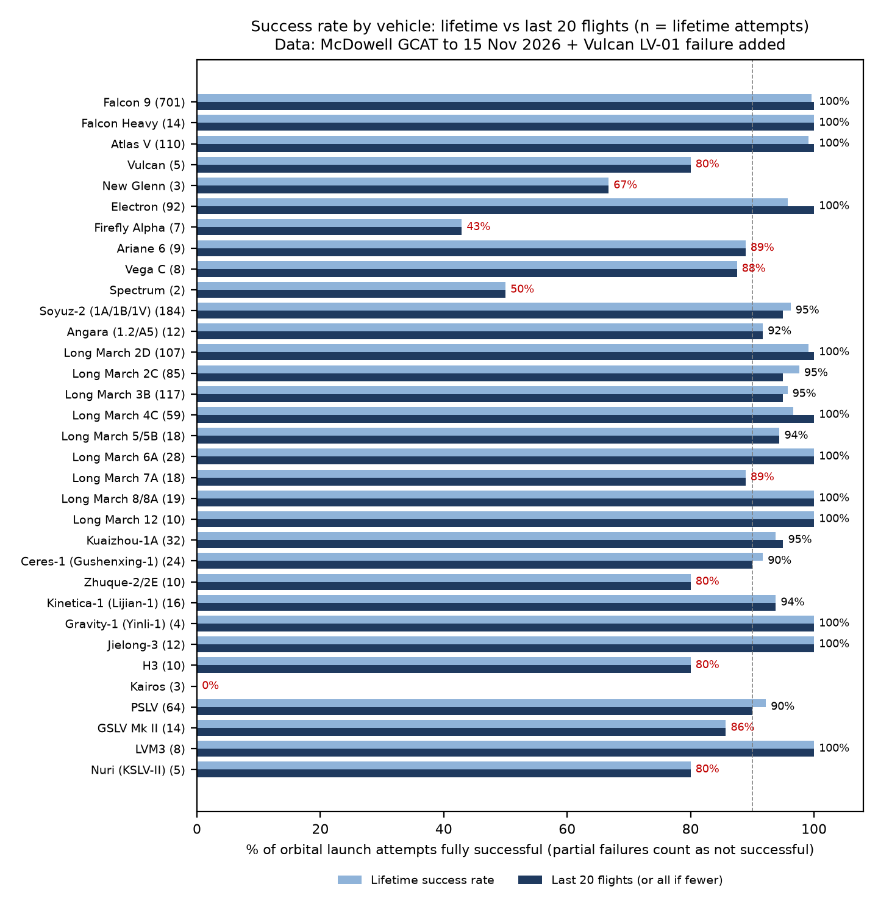
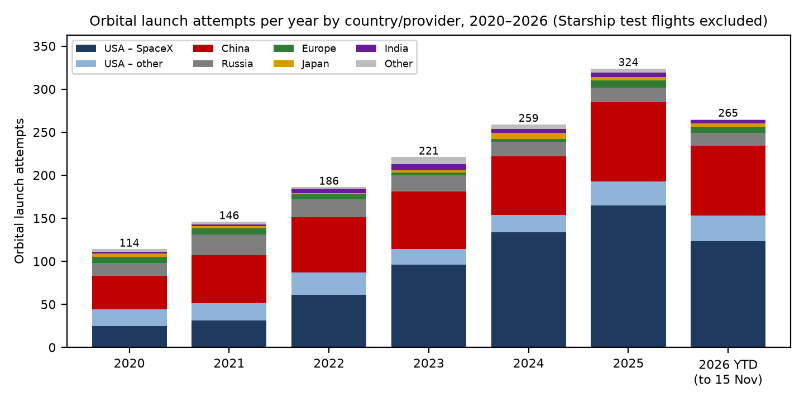
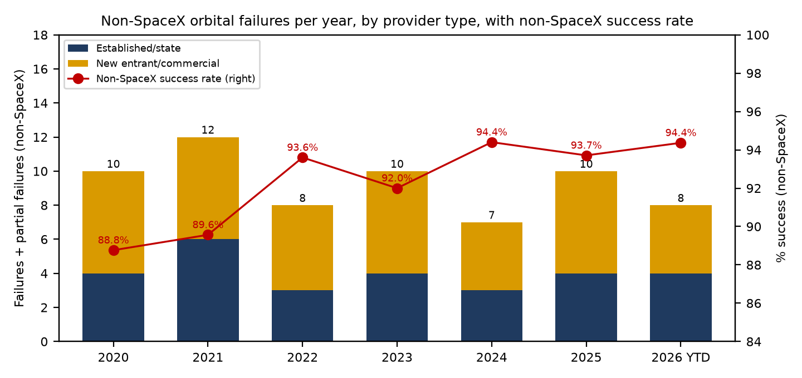
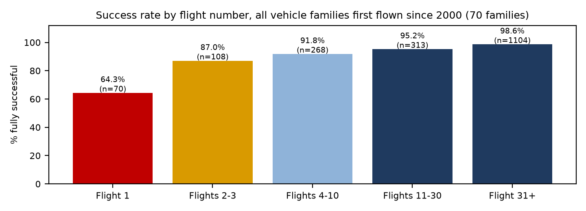

Global Orbital Launch Vehicle Success Rates, 2025–2026
Recent performance, last-20-flight records and anomaly log, including the 15 November 2026 Vulcan failure
Prepared for Paul · Data cut-off: 15 Nov 2026, ~19:50 UTC (11:50 AM PST) · Primary data set: J. McDowell’s GCAT launch list, snapshot updated 15 Nov 2026 10:17 UTC [1], with the Vulcan LV-01 failure (17:40 UTC) added manually from ULA’s statement [7,17].
Counting rules
- Orbital attempts only. I count launches that GCAT codes as orbital (O) or deep-space (D) with a success (S) or failure (F) result [2]. Pad explosions with no launch (GCAT “E”) are left out of the rates but listed as anomalies. These are the Kuaizhou-1A on 1 Mar 2025 and the New Glenn static-fire explosion on 28 May 2026. Suborbital tests such as Soyuz-5’s 30 Apr 2026 debut (GCAT “NS”) [78] and Rocket Lab HASTE suborbital flights are also left out.
- Outcomes. “Success” means GCAT S with no fraction. “Partial failure” means GCAT S with a success fraction below 100 (vehicle reached orbit but under-performed or mis-delivered). “Failure” means GCAT F, including GCAT partial-credit failures where the payload was lost (H3 F8 OF20, New Glenn NG-3 OF40, Falcon 9 Starlink 9-3 OF40). Success rate = full successes ÷ attempts, so partial failures count against the rate.
- Mission-success anomalies (for example Vulcan’s solid-booster nozzle failures, or Falcon 9 upper stages that missed a deorbit burn after deploying their payload) count as successes in the rates. They are listed separately in Section 4.
- Starship test flights are shown separately (Section 3.3) and kept out of the annual totals and charts, because GCAT codes some as orbital and some as near-orbital and their goals are test objectives rather than payload delivery.
- Families. Variants are grouped (for example Atlas V 401–551/N22, Soyuz-2-1A/1B/1V, PSLV/-XL/-DL/-QL, Long March 8/8A, Zhuque-2/2E). “Last 20” means the vehicle’s 20 most recent attempts, or all of them if it has flown fewer than 20 times. Counts can differ slightly from Wikipedia or provider tallies. For 2026 to 14 Nov, Wikipedia lists 263 orbital launches with 7 failures [5]. GCAT, by my rules, gives 264 with 7 failures before today’s Vulcan launch. For 2025, Space Stats gives 324 attempts with 9 failures [4], the same as GCAT here (324; 9 failures plus 1 partial). Rocket Lab counts 100 Electron launches [93]. That figure includes suborbital HASTE flights; GCAT lists 92 orbital Electron attempts, one of them a HASTE.
1. Executive summary
Bottom line. The impression that many non-SpaceX vehicles are failing is only partly right. The non-SpaceX success rate has not got worse. It was 93.7% in 2025 and 94.4% in 2026 to date, against 88.8% in 2020 [1]. The number of failures is high, though: 10 non-SpaceX failures or partial failures in 2025 (the second-highest of the decade after 2021’s 12) and 8 in 2026 so far. What has changed most is who is failing. In the last 12 months (16 Nov 2025–15 Nov 2026), five of the 11 failures and partial failures were on vehicles flown by large established operators carrying high-value payloads: H3 (JAXA/MHI), PSLV (ISRO), Long March 3B and 7A (CASC) and Vulcan (ULA), plus a Soyuz partial failure. Over the same period SpaceX flew 142 orbital launches with no failures [1].
Today’s failure. ULA’s Vulcan VC6L launched the first of 38 contracted Amazon Leo missions (“Vulcan Leo 1”/LV-01, 40 satellites) from SLC-41 at 17:40 UTC (9:40 AM PST). ULA says it “suffered an anomaly 10 minutes into the flight and failed to deliver the Amazon mission to orbit” [7]. McDowell places the failure in the first Centaur V burn [17]. ULA has not given a cause and said it had no specific data yet [7]. Spaceflight Now calls it ULA’s first outright mission failure since the company formed in 2006 [19]. It was Vulcan’s fifth flight and its first in nine months. Vulcan is now 1 failure in 5 flights, and two of its four successes had solid-booster nozzle failures [24,23].
Headline numbers
- Global volume: 324 orbital attempts in 2025 (314 successes, 9 failures, 1 partial failure) and 265 in 2026 to 15 Nov (257 successes, 8 failures), not counting Starship [1,4]. SpaceX flew 51% of 2025 attempts (165) and 46% of 2026 attempts so far (123).
- Most reliable high-cadence vehicles (last 20 flights all successful): Falcon 9 (348 consecutive successes since the Starlink 9-3 failure of 12 Jul 2024; 701 attempts, 99.6% lifetime), Atlas V (110 attempts, no outright failures in 24 years), Electron (20 straight; 95.7% lifetime), Long March 2D, 4B, 4C, 6A, 8/8A and 12, and LVM3 (8/8) [1,93].
- Established Western/Japanese/Indian vehicles in trouble: Vulcan 80% (4/5) with an open SRB investigation and now a total loss. H3 80% (8/10), with 2 failures in 10 flights, though it returned to flight in Jun 2026 [56]. PSLV has failed twice in a row (May 2025, Jan 2026), both in the third stage, and has been grounded for 10 months [63].
- European rockets are doing better than their reputation. Ariane 6 has 8 successes and 1 partial failure (the 2024 debut) in 9 flights, with 4 Ariane 62 flights in 2025 and 3 Ariane 64 Amazon Leo flights in 2026 [102,100,101]. Vega C has had 7 straight successes since its Dec 2022 failure [103,104].
- Startups: Firefly Alpha 3 successes in 7 flights (43%) but back flying from Mar 2026 [91]. New Glenn 2 of 3, grounded since a pad explosion in May 2026 [31]. Kairos 0 of 3 [57]. Spectrum 1 of 2 (orbit reached Sep 2026) [106]. Vikram-1 1 of 1 [68]. In China, Ceres-1 is 22/24 and Kinetica-1 15/16, but Zhuque-2/2E is 8/10 and Tianlong-3 and Ceres-2 failed on their debuts [1].
- Early flights are where failures happen. Across the 70 vehicle families first flown since 2000, maiden flights succeeded 64% of the time, flights 2–3 87%, flights 4–10 92%, flights 11–30 95% and flight 31 onward 99% [1].
Implications for constellation deployment
- Amazon Leo is the most exposed of the major constellations. About 396 satellites had been launched before today (40 more would have taken the total to 436) [19]. Two of its four heavy launchers are now grounded. Vulcan (38 launches contracted) is grounded pending the LV-01 investigation. New Glenn (24 launches) has not flown since the NG-3 upper-stage failure in Apr 2026, and its first stage exploded on the pad in May. Blue Origin expected to finish that investigation in late Nov 2026 [31], and a January return is reported but [UNVERIFIED: press only] [33]. Atlas V flew its last Amazon mission in Jul 2026; the six that remain are reserved for Starliner [98]. That leaves Ariane 64 (next Amazon flight LE-04 no earlier than 23 Nov) [112] and Falcon 9. The FCC waived the Jul 2026 half-constellation milestone but kept the Jul 2029 deadline for all 3,232 satellites [113].
- US heavy-lift is now effectively SpaceX alone in the near term. With Vulcan and New Glenn grounded and Atlas V reserved for Starliner, Falcon 9 and Falcon Heavy are the only US vehicles available for medium/heavy commercial and national-security payloads until one of them returns. The Space Force had already paused national-security missions on Vulcan in Feb 2026 [26,27].
- OneWeb and Telesat fly on Falcon 9, so their exposure to the current failures is limited. Telesat’s first Lightspeed launch has slipped to mid-2027, followed by 15 Falcon 9s in 45 weeks [114]. Eutelsat OneWeb replenishment launches continue on Falcon 9 [117]. IRIS² first launches are set for 2029 [115]. Observers name Ariane 6 capacity, much of it booked by Amazon Leo, as a bottleneck [116]. Ariane 6’s clean 2025–26 record makes that a capacity risk rather than a reliability risk.
- AST SpaceMobile has already lost a satellite to a launcher. BlueBird 7 was lost on New Glenn NG-3 and was insured [30]. AST has shifted near-term launches to Falcon 9. The lesson for any operator using new vehicles (New Glenn, Vulcan, Neutron, Ariane 64, Chinese reusables): book capacity across several vehicles and insure the first flights.
2. Today’s ULA Vulcan failure (15 Nov 2026): what is known
Item | What is known (as of ~19:50 UTC, 15 Nov) | Source |
|---|---|---|
Vehicle | Vulcan VC6L (six GEM 63XL solid boosters, first flight of this configuration), with the “LEO-optimized Centaur V” upper stage; fifth Vulcan flight; first in nine months | |
Mission / payload | “Vulcan Leo 1” (Amazon Leo LV-01): 40 Amazon Leo broadband satellites, Amazon’s largest batch so far and the first of 38 Vulcan launches Amazon has bought | |
Launch | SLC-41, Cape Canaveral SFS; T-0 target 12:40:30 p.m. EST = 17:40:30 UTC (9:40 AM PST). A hold and recycle at T-7 min came earlier; Spaceflight Now reports a final hold at T-20 s. Scrubs on 13 Nov (nitrogen plant power loss) and 14 Nov (ground–vehicle network issue). Wikipedia’s 14 Nov 17:11 listing is out of date | |
Early flight | Solid boosters burned out and separated normally. Observers saw the first-stage burn and staging run later than the published timeline, and the telemetry animation showed unusual Centaur attitude changes | |
Failure | “Anomaly 10 minutes into the flight… failed to deliver the Amazon mission to orbit” (ULA). The failure came during the first Centaur V burn (planned length 12 min 15 s) | |
Cause | Unknown. ULA: “Since the anomaly just occurred, we don’t have any specific data yet.” A Wikipedia edit blaming a Centaur reaction-control failure cites ULA’s statement, but the statement says nothing of the kind. [UNVERIFIED – treat as speculation]. Whether the countdown issue played any role is “not yet known” (SFN) | |
Investigation | ULA will work with its customer and “other appropriate organizations” to find the cause and corrective action, and promises customer visibility. As of cut-off I found no public FAA statement. Amazon: “ULA has been a trusted partner… we believe they’ll learn from this mission.” NASA Administrator Isaacman offered NASA assistance | |
Context | First outright ULA mission failure since 2006. Vulcan’s solid-booster nozzle problems on CERT-2 (Oct 2024) and USSF-87 (Feb 2026) led to a redesigned nozzle; the USSF-87 investigation is still open and the Space Force pause on national-security missions remains. Blue Origin had retrofitted the BE-4 engines on this vehicle with the main-oxygen-valve fix from the New Glenn pad explosion |
3. Summary table: active and recently active orbital launch vehicles
Counts: GCAT orbital + deep-space attempts to 15 Nov 2026 (plus Vulcan LV-01) [1]. S/F/P = successes/failures/partial failures. Life % and L20 % = full successes ÷ attempts. “2026” = 1 Jan–15 Nov. Status column: see Sections 5–6 for sources. Red figures = success rate below 90%.
Vehicle | Provider | Country | 1st | Tot | S | F | P | Life % | Last 20 | 2025 | 2026 | Last failure | Status (15 Nov 2026) |
|---|---|---|---|---|---|---|---|---|---|---|---|---|---|
Falcon 9 | SpaceX | USA | 2010 | 701 | 698 | 2 | 1 | 99.6% | 20/20 (100%) | 165 | 120 | 2024-07-12 | Active |
Falcon Heavy | SpaceX | USA | 2018 | 14 | 14 | 0 | 0 | 100% | 14/14 (100%) | 0 | 3 | - | Active |
Atlas V | ULA | USA | 2002 | 110 | 109 | 0 | 1 | 99.1% | 20/20 (100%) | 5 | 4 | - | Active – 6 left, all for Starliner |
Vulcan | ULA | USA | 2024 | 5 | 4 | 1 | 0 | 80% | 4/5 (80%) | 1 | 2 | 2026-11-15 | Grounded – LV-01 failure 15 Nov 2026; USSF NSSL pause since Feb |
New Glenn | Blue Origin | USA | 2025 | 3 | 2 | 1 | 0 | 67% | 2/3 (67%) | 2 | 1 | 2026-04-19 | Grounded since NG-3 failure (Apr) and 28 May pad explosion; investigation to close late Nov 2026 |
Electron | Rocket Lab | USA/NZ | 2017 | 92 | 88 | 4 | 0 | 95.7% | 20/20 (100%) | 18 | 19 | 2023-09-19 | Active |
Firefly Alpha | Firefly Aerospace | USA | 2021 | 7 | 3 | 3 | 1 | 43% | 3/7 (43%) | 1 | 1 | 2025-04-29 | Active – RTF 12 Mar 2026 |
Minotaur I/IV/V/C | Northrop Grumman | USA | 2000 | 21 | 21 | 0 | 0 | 100% | 20/20 (100%) | 1 | 1 | - | Active (low cadence) |
Pegasus XL | Northrop Grumman | USA | 1990 | 46 | 42 | 4 | 0 | 91.3% | 20/20 (100%) | 0 | 1 | 1996-11-04 | Active (rare) |
SLS Block 1 | NASA/Boeing | USA | 2022 | 2 | 2 | 0 | 0 | 100% | 2/2 (100%) | 0 | 1 | - | Active (2 flights) |
Antares 230/230+ | Northrop Grumman | USA | 2013 | 18 | 17 | 1 | 0 | 94.4% | 17/18 (94.4%) | 0 | 0 | 2014-10-28 | Retired 2023 (Antares 330 NET 2027) |
Delta IV Heavy | ULA | USA | 2004 | 16 | 15 | 1 | 0 | 93.8% | 15/16 (93.8%) | 0 | 0 | 2004-12-21 | Retired Apr 2024 |
LauncherOne | Virgin Orbit | USA | 2020 | 6 | 4 | 2 | 0 | 67% | 4/6 (67%) | 0 | 0 | 2023-01-09 | Ended 2023 |
Astra Rocket 3 | Astra | USA | 2020 | 7 | 2 | 5 | 0 | 29% | 2/7 (29%) | 0 | 0 | 2022-06-12 | Ended 2022 |
Terran 1 | Relativity | USA | 2023 | 1 | 0 | 1 | 0 | 0% | 0/1 (0%) | 0 | 0 | 2023-03-23 | Ended 2023 (Terran R in dev.) |
RS1 | ABL | USA | 2023 | 1 | 0 | 1 | 0 | 0% | 0/1 (0%) | 0 | 0 | 2023-01-10 | Ended 2023 |
Ariane 6 | Arianespace/ArianeGroup | Europe | 2024 | 9 | 8 | 0 | 1 | 89% | 8/9 (89%) | 4 | 4 | - | Active – Ariane 62/64 |
Vega C | Avio | Europe | 2022 | 8 | 7 | 1 | 0 | 88% | 7/8 (88%) | 3 | 2 | 2022-12-21 | Active – Avio-operated since 2026 |
Vega | Arianespace/Avio | Europe | 2012 | 22 | 20 | 2 | 0 | 90.9% | 18/20 (90%) | 0 | 0 | 2020-11-17 | Retired Sep 2024 |
Ariane 5 | Arianespace | Europe | 1996 | 117 | 112 | 3 | 2 | 95.7% | 20/20 (100%) | 0 | 0 | 2002-12-11 | Retired Jul 2023 |
Spectrum | Isar Aerospace | Europe | 2025 | 2 | 1 | 1 | 0 | 50% | 1/2 (50%) | 1 | 1 | 2025-03-30 | Active – reached orbit Sep 2026 |
Soyuz-ST (Kourou) | Arianespace | Europe/Russia | 2011 | 27 | 26 | 1 | 0 | 96.3% | 19/20 (95%) | 0 | 0 | 2014-08-22 | Ended 2022 |
Soyuz-2 (1A/1B/1V) | Roscosmos/Progress | Russia | 2006 | 184 | 177 | 4 | 3 | 96.2% | 19/20 (95%) | 13 | 13 | 2017-11-28 | Active |
Angara (1.2/A5) | Khrunichev | Russia | 2014 | 12 | 11 | 1 | 0 | 91.7% | 11/12 (91.7%) | 4 | 1 | 2021-12-27 | Active (low cadence) |
Proton-M | Khrunichev | Russia | 2001 | 116 | 104 | 10 | 2 | 90% | 19/20 (95%) | 0 | 1 | 2015-05-16 | Active (being phased out) |
Long March 2C | CASC/CALT | China | 1976 | 85 | 83 | 1 | 1 | 97.6% | 19/20 (95%) | 3 | 5 | 2011-08-18 | Active |
Long March 2D | CASC/SAST | China | 1992 | 107 | 106 | 0 | 1 | 99.1% | 20/20 (100%) | 7 | 6 | - | Active |
Long March 2F | CASC/CALT | China | 1999 | 29 | 29 | 0 | 0 | 100% | 20/20 (100%) | 3 | 2 | - | Active |
Long March 3B | CASC/CALT | China | 1996 | 117 | 112 | 5 | 0 | 95.7% | 19/20 (95%) | 13 | 3 | 2026-01-16 | Active |
Long March 3C | CASC/CALT | China | 2008 | 20 | 20 | 0 | 0 | 100% | 20/20 (100%) | 2 | 0 | - | Active (rare) |
Long March 4B | CASC/SAST | China | 1999 | 59 | 58 | 1 | 0 | 98.3% | 20/20 (100%) | 4 | 3 | 2013-12-09 | Active |
Long March 4C | CASC/SAST | China | 2006 | 59 | 57 | 2 | 0 | 96.6% | 20/20 (100%) | 3 | 1 | 2019-05-22 | Active |
Long March 5/5B | CASC/CALT | China | 2016 | 18 | 17 | 1 | 0 | 94.4% | 17/18 (94.4%) | 4 | 1 | 2017-07-02 | Active |
Long March 6 | CASC/SAST | China | 2015 | 15 | 15 | 0 | 0 | 100% | 15/15 (100%) | 1 | 1 | - | Active |
Long March 6A | CASC/SAST | China | 2022 | 28 | 28 | 0 | 0 | 100% | 20/20 (100%) | 10 | 9 | - | Active |
Long March 6C | CASC/SAST | China | 2024 | 2 | 2 | 0 | 0 | 100% | 2/2 (100%) | 0 | 1 | - | Active |
Long March 7 | CASC/CALT | China | 2016 | 11 | 11 | 0 | 0 | 100% | 11/11 (100%) | 1 | 1 | - | Active |
Long March 7A | CASC/CALT | China | 2020 | 18 | 16 | 2 | 0 | 89% | 16/18 (89%) | 6 | 4 | 2026-08-10 | Active? – no flight since Aug failure |
Long March 8/8A | CASC/CALT | China | 2020 | 19 | 19 | 0 | 0 | 100% | 19/19 (100%) | 7 | 9 | - | Active |
Long March 10B | CASC/CALT | China | 2026 | 1 | 1 | 0 | 0 | 100% | 1/1 (100%) | 0 | 1 | - | Active (1 flight) |
Long March 11 | CASC/CALT | China | 2015 | 18 | 18 | 0 | 0 | 100% | 18/18 (100%) | 1 | 0 | - | Active |
Long March 12 | CASC/SAST | China | 2024 | 10 | 10 | 0 | 0 | 100% | 10/10 (100%) | 3 | 6 | - | Active |
Long March 12A | CASC/SAST | China | 2025 | 1 | 1 | 0 | 0 | 100% | 1/1 (100%) | 1 | 0 | - | Active (1 flight) |
Long March 12B | CASC Commercial Rocket (CACL) | China | 2026 | 1 | 1 | 0 | 0 | 100% | 1/1 (100%) | 0 | 1 | - | 1 flight |
Kuaizhou-1A | ExPace (CASIC) | China | 2013 | 32 | 30 | 2 | 0 | 93.8% | 19/20 (95%) | 2 | 0 | 2021-12-15 | No flight since Dec 2025 |
Kuaizhou-11 | ExPace (CASIC) | China | 2020 | 7 | 6 | 1 | 0 | 86% | 6/7 (86%) | 1 | 3 | 2020-07-10 | Active |
Ceres-1 (Gushenxing-1) | Galactic Energy | China | 2020 | 24 | 22 | 2 | 0 | 91.7% | 18/20 (90%) | 6 | 2 | 2025-11-10 | Active |
Ceres-2 (Gushenxing-2) | Galactic Energy | China | 2026 | 2 | 1 | 1 | 0 | 50% | 1/2 (50%) | 0 | 2 | 2026-01-17 | Active |
Pallas-1 (Zhishenxing-1) | Galactic Energy | China | 2026 | 1 | 1 | 0 | 0 | 100% | 1/1 (100%) | 0 | 1 | - | Active (1 flight) |
Zhuque-2/2E | LandSpace | China | 2022 | 10 | 8 | 2 | 0 | 80% | 8/10 (80%) | 2 | 4 | 2025-08-15 | Active |
Zhuque-3 | LandSpace | China | 2025 | 2 | 2 | 0 | 0 | 100% | 2/2 (100%) | 1 | 1 | - | Active |
Tianlong-2 | Space Pioneer | China | 2023 | 1 | 1 | 0 | 0 | 100% | 1/1 (100%) | 0 | 0 | - | Retired after 1 flight |
Tianlong-3 | Space Pioneer | China | 2026 | 1 | 0 | 1 | 0 | 0% | 0/1 (0%) | 0 | 1 | 2026-04-03 | Grounded after debut failure |
Gravity-1 (Yinli-1) | Orienspace | China | 2024 | 4 | 4 | 0 | 0 | 100% | 4/4 (100%) | 1 | 2 | - | Active |
Kinetica-1 (Lijian-1) | CAS Space | China | 2022 | 16 | 15 | 1 | 0 | 93.8% | 15/16 (93.8%) | 5 | 5 | 2024-12-27 | Active |
Kinetica-2 (Lijian-2) | CAS Space | China | 2026 | 2 | 2 | 0 | 0 | 100% | 2/2 (100%) | 0 | 2 | - | Active |
Hyperbola-1 (Shuang Quxian-1) | i-Space | China | 2019 | 8 | 4 | 4 | 0 | 50% | 4/8 (50%) | 1 | 0 | 2024-07-10 | Retiring; Hyperbola-3 next |
Jielong-3 | China Rocket (CALT) | China | 2022 | 12 | 12 | 0 | 0 | 100% | 12/12 (100%) | 4 | 4 | - | Active |
H3 | MHI/JAXA | Japan | 2023 | 10 | 8 | 2 | 0 | 80% | 8/10 (80%) | 3 | 3 | 2025-12-22 | Active |
H-IIA | MHI/JAXA | Japan | 2001 | 50 | 49 | 1 | 0 | 98% | 20/20 (100%) | 1 | 0 | 2003-11-29 | Retired Jun 2025 |
H-IIB | MHI/JAXA | Japan | 2009 | 9 | 9 | 0 | 0 | 100% | 9/9 (100%) | 0 | 0 | - | Retired 2020 |
Epsilon | JAXA/IHI | Japan | 2013 | 6 | 5 | 1 | 0 | 83% | 5/6 (83%) | 0 | 0 | 2022-10-12 | Retired; Epsilon S in development |
Kairos | Space One | Japan | 2024 | 3 | 0 | 3 | 0 | 0% | 0/3 (0%) | 0 | 1 | 2026-03-05 | Grounded after 3 failures |
PSLV | ISRO/NSIL | India | 1993 | 64 | 59 | 4 | 1 | 92.2% | 18/20 (90%) | 1 | 1 | 2026-01-12 | Grounded since Jan 2026; PS3 requalification |
GSLV Mk II | ISRO | India | 2010 | 14 | 12 | 2 | 0 | 86% | 12/14 (86%) | 2 | 2 | 2021-08-12 | Active |
LVM3 | ISRO/NSIL | India | 2017 | 8 | 8 | 0 | 0 | 100% | 8/8 (100%) | 2 | 0 | - | Active |
SSLV | ISRO/NSIL | India | 2022 | 3 | 2 | 1 | 0 | 67% | 2/3 (67%) | 0 | 0 | 2022-08-07 | Active (no flight since Aug 2024) |
Vikram-1 | Skyroot | India | 2026 | 1 | 1 | 0 | 0 | 100% | 1/1 (100%) | 0 | 1 | - | Active (1 flight) |
Nuri (KSLV-II) | KARI/Hanwha | South Korea | 2021 | 5 | 4 | 1 | 0 | 80% | 4/5 (80%) | 1 | 1 | 2021-10-21 | Active |
Hanbit-Nano | Innospace | South Korea | 2025 | 1 | 0 | 1 | 0 | 0% | 0/1 (0%) | 1 | 0 | 2025-12-23 | Return to flight pending |
ADD solid SLV (TV2) | Agency for Defense Development | South Korea | 2023 | 1 | 1 | 0 | 0 | 100% | 1/1 (100%) | 0 | 0 | - | Test programme |
Simorgh | ISA (Iran) | Iran | 2019 | 6 | 2 | 4 | 0 | 33% | 2/6 (33%) | 0 | 0 | 2021-12-30 | Active |
Qased | IRGC (Iran) | Iran | 2020 | 3 | 3 | 0 | 0 | 100% | 3/3 (100%) | 0 | 0 | - | Active |
Qaem-100 | IRGC (Iran) | Iran | 2023 | 3 | 2 | 1 | 0 | 67% | 2/3 (67%) | 0 | 0 | 2023-03-04 | Active |
Zoljanah | Iran MoD | Iran | 2025 | 1 | 0 | 1 | 0 | 0% | 0/1 (0%) | 1 | 0 | 2025-09-18 | Test |
Chollima-1 & new kerolox LV | NATA (DPRK) | North Korea | 2023 | 4 | 1 | 3 | 0 | 25% | 1/4 (25%) | 0 | 0 | 2024-05-27 | Uncertain |
Shavit 2 | IAI | Israel | 2007 | 7 | 7 | 0 | 0 | 100% | 7/7 (100%) | 1 | 0 | - | Active (rare) |
Eris Block 1 | Gilmour Space | Australia | 2025 | 1 | 0 | 1 | 0 | 0% | 0/1 (0%) | 1 | 0 | 2025-07-29 | Flight 2 targeted early 2027 |
Not yet flown (orbital) or ended without flying, as of 15 Nov 2026: Rocket Lab Neutron – first launch moved to 2027 after composite-tank issues [94]. Relativity Terran R – still officially “late 2026”, but both stages still need hot-fire testing [95]. Northrop Grumman Antares 330 / Firefly–NG Eclipse (MLV) – no earlier than 2027 [97]. Stoke Nova – first half of 2027 [96]. RFA One – slipped to 2027 after a July 2026 test issue [107]. PLD Miura 5 – first half of 2027 [108]. MaiaSpace Maia – orbital attempt H2 2027 [109]. Orbex Prime – company entered administration Feb 2026 [110]. Skyrora XL – now tentatively 2030 [111]. Epsilon S – launch rehearsal Nov 2026, flight targeted FY2026 [61]. Interstellar ZERO – 2027 [62]. Agnikul Agnibaan (orbital) – slipped to Q1 2027 [70]. i-Space Hyperbola-3 / Orienspace Gravity-2 – late 2026/2027 [53]. ABL RS1 – programme ended after its single 2023 failure (in table). [UNVERIFIED: some status dates are company targets]
3.1 Charts

Figure 1. Lifetime vs last-20 success rate for key vehicles. Source: GCAT [1]; analysis by author.

Figure 2. Orbital launch attempts per year by country/provider. SpaceX alone flew more than the rest of the world combined in 2025. Source: GCAT [1].

Figure 3. Non-SpaceX failures (incl. partial) per year. “New entrant/commercial” covers commercial start-ups (Rocket Lab, Firefly, Blue Origin, Isar, Space One, Gilmour, Innospace, Skyroot and Chinese commercial firms including CAS Space and China Rocket’s Jielong). All other non-SpaceX vehicles are “Established/state”. Source: GCAT [1].
3.2 Most recent 20 orbital launch attempts worldwide
Newest first; UTC. Includes Starship Flight 15, which GCAT codes as orbital. Source: GCAT [1]; Vulcan from [7]; Starship from [88].
Date (UTC) | Vehicle | Mission / payload | Orbit | Outcome |
|---|---|---|---|---|
2026 Nov 15 1740 | Vulcan | Vulcan Leo 1 / Amazon Leo LV-01 (40 sats | LEO | FAILURE – anomaly ~T+10 min during first Centaur V burn; 40 Amazon Leo sats lost; cause TBD |
2026 Nov 14 0530 | Electron | The Mountain God Rises (QPS-SAR-19) | LEO | Success |
2026 Nov 14 0116 | Soyuz-2 (1A/1B/1V) | KOEN/Kinosputnik (Soyuz Rideshare 17) | SSO | Success |
2026 Nov 13 2247 | Starship (V3, flight 15) | Starship Flight 15 (Ship 42) | LEO | Success (test flight; ship caught 14 Nov; booster diverted to sea) |
2026 Nov 12 0436 | Falcon 9 | USSF-627 (SBST R-5) | LEO | Success |
2026 Nov 11 1141 | Long March 2D | Tanluzhe | SSO | Success |
2026 Nov 8 2024 | Long March 12 | WHDW 29 | LEO | Success |
2026 Nov 7 1325 | Soyuz-2 (1A/1B/1V) | Kosmos-2621 (Glonass) | MEO | Success |
2026 Nov 7 0048 | Falcon 9 | USSF-432 (SBST R-4) | LEO | Success |
2026 Nov 6 2337 | Ceres-2 (Gushenxing-2) | Guanlan Shiyan | LEO | Success |
2026 Nov 5 1558 | Long March 2C | YG51 7-9 (YG51) | LEO | Success |
2026 Nov 3 0015 | Kinetica-2 (Lijian-2) | Qianfan Jigui 21 | LEO | Success |
2026 Nov 2 1641 | Electron | The Sea God Surveys (QPS-SAR-20) | LEO | Success |
2026 Oct 31 0404 | Falcon 9 | Starlink-429 | LEO | Success |
2026 Oct 30 1821 | GSLV Mk II | NVS-03 (IRNSS-1L) | GTO | Success |
2026 Oct 27 0725 | Falcon 9 | Starlink-428 | LEO | Success |
2026 Oct 25 0203 | Long March 8/8A | WHDW 28 | LEO | Success |
2026 Oct 23 2248 | Falcon 9 | Starlink-427 | LEO | Success |
2026 Oct 23 1925 | Long March 4B | YG53/YG56 | LEO | Success |
2026 Oct 23 1015 | Long March 6A | Yaogan 50-03 | LEO | Success |
3.3 Starship test flights (shown separately)
Tally on this basis: 7 successes, 4 partial failures, 4 failures in 15 flights. GCAT’s propulsive coding instead gives 11 successes and 4 failures (flights 1, 2, 7 and 8) [1]. Dates and vehicles are from GCAT. Outcomes for flights 1–11 come from the GCAT notes and the public record, and are not individually footnoted. [UNVERIFIED: flights 1–11 outcomes summarised without individual citations]
# | Date (UTC) | Vehicles | Outcome (my test-objective assessment) |
|---|---|---|---|
1 | 20 Apr 2023 | B7/S24 | Failure – lost multiple engines, flight terminated |
2 | 18 Nov 2023 | B9/S25 | Failure – booster exploded after staging; ship lost near end of burn |
3 | 14 Mar 2024 | B10/S28 | Partial – reached planned trajectory; ship lost on re-entry |
4 | 6 Jun 2024 | B11/S29 | Success – both stages made soft splashdowns |
5 | 13 Oct 2024 | B12/S30 | Success – first booster tower catch |
6 | 19 Nov 2024 | B13/S31 | Success |
7 | 16 Jan 2025 | B14/S33 | Failure – ship lost ~8.5 min (fire/leak in aft section), debris over Caribbean |
8 | 6 Mar 2025 | B15/S34 | Failure – ship lost engines and broke up |
9 | 27 May 2025 | B14.2/S35 | Partial – leaks, loss of attitude, break-up on re-entry |
10 | 26 Aug 2025 | B16/S37 | Success |
11 | 13 Oct 2025 | B15.2/S38 | Success |
12 | 22 May 2026 | B19/S39 (V3) | Partial – ship splashed down despite losing an RVac; booster relights failed; FAA mishap probe [84,85] |
13 | 24 Jul 2026 | B20/S40 | Success – 20 Starlink V3 deployed; booster failed to relight 5 engines for landing burn [86] |
14 | 28 Sep 2026 | B21/S41 | Partial – first orbital flight, 26 Starlink V3 deployed; early engine shutdown forced early deorbit [87] |
15 | 13 Nov 2026 | B22/S42 | Success – orbit, 26 Starlink V3; first upper-stage tower catch (14 Nov); booster diverted to sea [88,89] |
4. Recent anomalies log (Nov 2024 – 15 Nov 2026), newest first
Type: F = launch failure; P = partial failure; A = anomaly where the primary mission still succeeded; G = ground/pad event (no launch); R = recovery-only anomaly (mission succeeded; reusable stage lost). Causes are as published by the operator or investigating body unless marked.
Date (UTC) | Vehicle – mission | Type | What happened / cause | Investigation / return to flight | Src |
|---|---|---|---|---|---|
15 Nov 2026 | Vulcan VC6L – Amazon Leo LV-01 (40 sats) | F | Anomaly ~T+10 min during first Centaur V burn. Observers saw late staging versus the published timeline. Cause unknown | Investigation opened by ULA with customer and others. Vulcan grounded in practice; USSF NSSL pause already in place | |
13 Nov 2026 | Starship Flight 15 | R | Mission success, including the first tower catch of an upper stage; Super Heavy B22 aborted its catch and exploded at offshore splashdown | SpaceX says the automated abort worked as designed | [88] |
28 Sep 2026 | Starship Flight 14 | P | First orbital flight; early engine shutdown forced early deorbit (about 3 h instead of 10 h) | Next flight (15) flew 13 Nov | [87] |
10 Aug 2026 | Long March 7A Y16 – ChinaSat-4B | F | Exploded ~85 s after liftoff from Wenchang; first CZ-7A failure since its 2020 debut | “Under investigation” (Xinhua); no cause published. The YF-100 engine is common to many CASC rockets | |
24 Jul 2026 | Starship Flight 13 | R | Ship success; booster failed to relight 5 engines and hit the Gulf hard | — | [86] |
28 May 2026 | New Glenn GS1-3 static fire | G | Vehicle and much of LC-36 destroyed; started at the main oxygen valve of one BE-4 | Modified valve qualified 10 Nov; fleet retrofit under way, including Vulcan BE-4s; investigation to close late Nov | |
22 May 2026 | Starship Flight 12 (V3 debut) | P | Ship splashed down despite losing an RVac; booster boostback and landing relights failed | FAA-required mishap investigation (booster) | |
19 Apr 2026 | New Glenn NG-3 – BlueBird 7 | F | One BE-3U short of thrust on the second upper-stage burn; satellite left too low and deorbited | FAA accepted final report 22 May: cryogenic leak froze a hydraulic line; 9 corrective actions | |
3 Apr 2026 | Tianlong-3 Y1 (debut) | F | Vented LOX ignited at the base and caused an aft fire; staged at ~40 km (planned ~70 km); stage 2 lost control at T+189.5 s | Cause announced Sep 2026; no second flight yet | |
5 Mar 2026 | Kairos F3 – Tatara-1R | F | Autonomous flight termination at T+68.8 s; static-electricity noise rebooted comms software and cut a safety-system link | Third failure in 3 flights; investigation reported Aug 2026 | |
12 Feb 2026 | Vulcan VC4S – USSF-87 | A | GEM 63XL nozzle burn-through ~T+20 s; vehicle compensated and reached orbit | USSF paused NSSL missions. Three credible causes found and mitigated with a nozzle redesign; investigation still open | |
2 Feb 2026 | Falcon 9 – Starlink 17-32 | A | Upper stage failed to ignite for its deorbit burn after deploying the satellites | Grounded ~5 days; FAA accepted corrective actions; flights resumed 7 Feb | |
17 Jan 2026 | Ceres-2 Y1 (debut) | F | First-stage nozzle throat liner not adequately supported; liner shifted, nozzle ablated | Fixed; Ceres-2 flew successfully on 6 Nov 2026 | |
16 Jan 2026 | Long March 3B/E Y115 – Shijian-32 | F | Third-stage (cryogenic) flight-segment failure | No public root cause; CZ-3B has since returned to flight | |
12 Jan 2026 | PSLV-C62 – EOS-N1 + rideshare | F | Anomaly near end of PS3 (third-stage) burn; second PS3 failure in 8 months | National expert committee. Strengthened PS3 (nozzle, seals, procedures) static-fired 12 Nov 2026; more tests planned; PSLV grounded | |
28 Dec 2025 | Soyuz-2.1b/Fregat – rideshare 16 | P | Fregat anomaly in final manoeuvre; some payloads in wrong orbits [UNVERIFIED: no Roscosmos statement found] | — | |
23 Dec 2025 | Long March 12A (debut) | R | Reached orbit; reusable first stage crashed short of the landing pad | — | [49] |
22 Dec 2025 | Hanbit-Nano (Innospace), Alcântara | F | Gas leak from forward first-stage combustion chamber ~T+33 s; inadequate sealing after reassembly | CENIPA final report published | |
22 Dec 2025 | H3 F8 – QZS-5 (Michibiki 5) | F | Second-stage second ignition failed. Payload adapter delaminated (made too hot during manufacture), broke at fairing separation and damaged stage-2 piping | Returned to flight 12 Jun 2026; bolted adapter joints going forward | |
10 Nov 2025 | Ceres-1 Y19 | F | Fourth stage shut down early; engine heat degraded PTFE cable insulation and caused a short | Fixes approved; flying again | |
18 Sep 2025 | Zoljanah (Iran), Semnan | F | Destroyed shortly after liftoff; undeclared by Iran [UNVERIFIED: unofficial trackers only] | — | |
15 Aug 2025 | Zhuque-2E Y3 | F | Arc short on the stage-2 450 V actuator power bus at low pressure; self-destruct at T+258 s | Cause published Sep 2025; flying again (4 launches in 2026) | |
30 Jul 2025 (29 Jul UTC) | Eris TestFlight1 (Gilmour) | F | Lost thrust after liftoff; electrical/thermal faults in two first-stage oxidiser-pump motors and inverters | Final report to the Australian Space Agency; flight 2 early 2027 | |
27 May 2025 | Starship Flight 9 | P | Ship lost attitude after leaks and broke up on re-entry; booster lost | — | [1] |
18 May 2025 | PSLV-C61 – EOS-09 | F | PS3 chamber-pressure drop. Root cause reported as nozzle-throat failure (imported graphite) [UNVERIFIED: press only] | Failure Analysis Committee report to PM, 2025 | |
29 Apr 2025 | Firefly Alpha FLTA006 – LM-400 demo | F | Plume-induced heating ruptured stage 1 at separation; pressure wave damaged the stage-2 nozzle | Thicker thermal protection and lower angle of attack; returned to flight 12 Mar 2026 UTC | |
30 Mar 2025 | Spectrum flight 1 (Isar), Andøya | F | A vent valve opened unintentionally; attitude lost at pitch-over; terminated ~T+30 s | Flight 2 reached orbit 5 Sep 2026 | |
6 Mar 2025 | Starship Flight 8 | F | Ship lost engines and broke up | — | [1] |
2 Mar 2025 | Falcon 9 – Starlink 12-20 | R | Booster B1086 landed, then toppled and was lost to a fire from an ascent fuel leak | — | |
1 Mar 2025 | Kuaizhou-1A Y33 | G | Vehicle failed before or at ignition at Jiuquan LA-95A (GCAT “E”) [UNVERIFIED: no official statement] | No Kuaizhou-1A launch since Dec 2025 | |
1 Feb 2025 | Falcon 9 – Starlink 11-4 | A | Upper stage missed its deorbit burn after a LOX leak; uncontrolled re-entry, debris in Poland | Short pause; fixes made | |
16 Jan 2025 | Starship Flight 7 | F | Ship lost ~8.5 min after liftoff; debris over the Caribbean | — | [1] |
27 Dec 2024 | Kinetica-1 Y6 | F | Damaged thermal-battery wire broke under vibration; third-stage servo failed; attitude lost | Closed; 10 successes since | |
18 Dec 2024 | Kairos F2 | F | First-stage nozzle TVC sensor gave false readings; vehicle spun and flight was terminated | — | [60] |
5. Established vehicles
Ariane 6 and Vega C (Europe)
Ariane 6 has a clean operational record. Its only blemish is the Jul 2024 debut, when the APU failed during a coast phase and the planned deorbit burn was not made. Payloads were deployed, so this counts as a partial failure here. Since then: four Ariane 62 successes in 2025 (CSO-3, MetOp-SG A1/Sentinel-5A, Sentinel-1D, Galileo L14) [102]. In 2026 the first Ariane 64 (VA267, 12 Feb) deployed 32 Amazon Leo satellites [100], and VA269 set an Ariane record with 36 Amazon Leo satellites [101]. The record is 8 of 9 (89% by my strict rule; 100% of flights reached orbit), with 4 flights in 2025 and 4 in 2026 to date [1]. Its limit is cadence, not reliability. Vega C failed on its second flight (VV22, Dec 2022, Zefiro 40 nozzle). It has flown seven successes in a row since returning in Dec 2024, including KOMPSAT-7 (VV28) and Sentinel-3C/FLEX (VV30, 15 Sep 2026, Avio’s second flight as operator) [103,104]. The original Vega retired in Sep 2024 with 20 of 22 successful.
Atlas V and Vulcan (ULA)
Atlas V is the most reliable expendable vehicle in the data set: 110 attempts, 109 full successes and one 2007 partial (NROL-30R), with no outright failure [1]. It flew 5 times in 2025 and 4 in 2026. Its final Amazon Leo launch (LA-08, 29 satellites) was on 2 Jul 2026, and the six that remain are reserved for Starliner [98,99]. Vulcan has not kept up that standard. Solid-booster nozzles failed on two of its first four flights (CERT-2, Oct 2024; USSF-87, Feb 2026), though both missions reached orbit. The Space Force then paused national-security missions on Vulcan [24,26]. ULA says it found three credible causes and redesigned the nozzle [23]. Today’s LV-01 boosters performed normally, but the vehicle failed in the Centaur phase [10,17]. Vulcan now stands at 4 of 5 (80%), with 1 Vulcan flight in 2025 against ULA’s plan of 10 [27].
H3 and H-IIA (Japan)
H-IIA retired in Jun 2025 after 50 flights with one failure (2003) [1]. H3 failed on its first flight (2023, second stage did not ignite). On flight 8 (22 Dec 2025) the payload adapter delaminated and damaged second-stage piping, and QZS-5 was lost [54,56]. It returned to flight on 12 Jun 2026 with the H3-30S configuration. Later flights include the MMX Mars-moon mission on 19 Oct 2026. That makes H3 8 of 10 (80%), with 3 flights in each of 2025 and 2026 [1]. Japan has no working commercial small launcher after Kairos’s third failure [59].
Soyuz-2, Angara and Proton (Russia)
Soyuz-2 is still a dependable workhorse: 184 attempts, 96.2% lifetime and 19 of the last 20, with 13 flights in each of 2025 and 2026. Its last outright failure was in Nov 2017 (Fregat). The Dec 2025 rideshare is counted as a partial failure because Fregat put some payloads in the wrong orbits [1,77]. Angara has flown 11 of 12 successfully (one Persei upper-stage partial in 2021). Proton-M flew once in 2026 and is being phased out. Russia’s total has fallen from 24 attempts in 2021 to 15 in 2026 so far [1]. Soyuz-5 flew a successful suborbital test on 30 Apr 2026 [78].
Long March (China)
The core Long March fleet remains highly reliable at high cadence. CZ-2D 106/107, CZ-2C 83/85, CZ-4B 58/59, CZ-6A 28/28, CZ-8/8A 19/19 and CZ-12 10/10, with no failures in the last 20 flights for any of 2D, 4B, 4C or 6A [1]. 2026 brought two state-rocket failures. A CZ-3B third stage failed with Shijian-32 on 16 Jan, its first failure since 2020 [37]. A CZ-7A exploded at ~T+85 s with ChinaSat-4B on 10 Aug [35]. China’s state rockets also introduced the reusable-booster CZ-12A (landing failed) [49], plus CZ-12B and CZ-10B, all of which reached orbit on their first flights. China flew 92 orbital attempts in 2025 and 81 in 2026 so far [1].
PSLV, GSLV and LVM3 (India)
PSLV was long India’s most reliable rocket, but it has failed twice in a row. PSLV-C61 (May 2025) and PSLV-C62 (Jan 2026) were both lost to third-stage (PS3) solid-motor problems [64,63]. ISRO static-fired a strengthened PS3 on 12 Nov 2026 with changes to the nozzle, seals, raw-material acceptance and NDT. It says more tests are planned, so PSLV has not yet returned to flight [63]. LVM3 is 8 for 8, most recently AST SpaceMobile’s BlueBird Block 2 (LVM3-M6, Dec 2025) [69]. GSLV Mk II has flown four straight successes since its 2021 cryogenic-stage failure, most recently NVS-03 on 30 Oct 2026 [1]. SSLV has not flown since Aug 2024.
6. Start-ups and new entrants
- Rocket Lab Electron has proven that a small launcher can become reliable. It has had 4 failures, the last in Sep 2023, followed by a 59-flight success streak by Rocket Lab’s count, and Rocket Lab celebrated its 100th Electron launch on 14 Nov 2026 [93]. Neutron has not flown; Rocket Lab moved its debut to 2027 [94].
- Firefly Alpha has 3 full successes in 7 flights. The Apr 2025 loss was traced to plume-induced aeroheating rupturing stage 1. Firefly returned to flight successfully with FLTA007 on 12 Mar 2026 UTC (11 Mar US time) [90,91].
- Blue Origin New Glenn has flown 2 of 3 successfully. The NG-2 ESCAPADE launch and first booster reuse were milestones. Then NG-3 stranded BlueBird 7 in a low orbit (Apr 2026) and a static-fire explosion destroyed a vehicle and damaged LC-36 (May 2026) [28,31]. The BE-4 valve finding also affects Vulcan, which uses the same engine family [32].
- Relativity (Terran 1 failed in 2023; Terran R not yet flown), ABL (RS1 failed and the programme ended), Astra (2 of 7) and Virgin Orbit (4 of 6) show how often US small-launch start-ups fail [1,95].
- Chinese commercial companies now fly often and have mixed records. Galactic Energy: Ceres-1 22 of 24, Ceres-2 1 of 2 (failed debut, then a success on 6 Nov 2026), Pallas-1 1 of 1. CAS Space: Kinetica-1 15 of 16, Kinetica-2 2 of 2. LandSpace: Zhuque-2/2E 8 of 10, Zhuque-3 2 of 2, with the first land landing by a Chinese commercial booster in Aug 2026 (the booster later toppled). Orienspace Gravity-1 is 4 of 4. Space Pioneer’s Tianlong-3 failed on its debut. i-Space Hyperbola-1 is 4 of 8 and is being retired [1,50,51,52,43].
- European microlaunchers: Isar’s Spectrum reached orbit on its second flight (5 Sep 2026) [106]. Every other European microlauncher is still to fly. RFA One, Miura 5 and Maia are now 2027, Skyrora around 2030, and Orbex is in administration [107,108,109,111,110].
- Asia-Pacific start-ups: Skyroot’s Vikram-1 reached orbit on its first attempt (18 Jul 2026), India’s first private orbital launch [67,68]. Space One’s Kairos is 0 of 3. Innospace’s Hanbit-Nano and Gilmour’s Eris both failed on their first flights [57,72,74]. Korea’s state Nuri has 4 straight successes, the latest on 7 Oct 2026 [71].
7. How often failures happen early in a vehicle’s life

Figure 4. Success rate by flight number across the 70 vehicle families first flown since 2000. Families group variants, so Long March 8A or Ariane 64 debuts count as later flights of their family. Source: GCAT [1]; analysis by author.
Maiden flights of vehicle families first flown since 2000 succeeded 64.3% of the time (45 of 70). Flights 2–3 succeeded 87.0%, flights 4–10 91.8%, flights 11–30 95.2% and flight 31 onward 98.6% [1]. In 2025–26, 14 new families made maiden flights and 8 reached orbit: New Glenn, Zhuque-3, CZ-12A, Kinetica-2, CZ-12B, CZ-10B, Vikram-1 and Pallas-1. All three new CASC-group rockets succeeded. The six that failed were Spectrum, Eris, Hanbit-Nano, Ceres-2, Tianlong-3 and Iran’s Zoljanah [1]. Two lessons follow. First, a vehicle’s first ~10 flights should be priced as high-risk, which is where Vulcan (5 flights), New Glenn (3), Ariane 6 (9), H3 (10) and Vega C (8) all still sit. Second, the failures at mature workhorses (PSLV on flight 64, CZ-3B on flight 117, CZ-7A on flight 18) show that long histories do not rule out problems with production quality or suppliers. ISRO’s PS3 fixes, for example, focus on raw-material acceptance and assembly checks [63].
Annex A. Last 20 launches by key vehicle
All tables: GCAT [1] (dates UTC; mission names as listed by GCAT), with outcome notes summarised from the sources in Section 4. “#” is the vehicle family’s cumulative attempt number. Where a vehicle has flown fewer than 20 times, all flights are shown.
Falcon 9 – 348 consecutive successes since 12 Jul 2024 · lifetime 698/701 (99.6%), last 20: 20/20
# | Date | Variant | Mission / payload | Orbit | Outcome |
|---|---|---|---|---|---|
682 | 26 Aug 2026 | Falcon 9 | Starlink-422 | LEO | Success |
683 | 02 Sep 2026 | Falcon 9 | Starlink-423 | LEO | Success |
684 | 06 Sep 2026 | Falcon 9 | Starlink-424 | LEO | Success |
685 | 10 Sep 2026 | Falcon 9 | USSF-153 (SBST R-2) | LEO | Success |
686 | 13 Sep 2026 | Falcon 9 | O3b mPOWER 11/13 | MEO | Success |
687 | 17 Sep 2026 | Falcon 9 | USSF-259 (SBST TH-1) | LEO | Success |
688 | 20 Sep 2026 | Falcon 9 | Starlink-425 | LEO | Success |
689 | 26 Sep 2026 | Falcon 9 | USSF-385 (SBST R-3) | LEO | Success |
690 | 01 Oct 2026 | Falcon 9 | Dragon Crew-13 (Dragon C213.2) | LEO (ISS) | Success |
691 | 01 Oct 2026 | Falcon 9 | Transporter-18 | LEO | Success |
692 | 10 Oct 2026 | Falcon 9 | SDA T1TL-A (Tranche 1 TL-A) | LEO | Success |
693 | 13 Oct 2026 | Falcon 9 | Starlink-426 | LEO | Success |
694 | 13 Oct 2026 | Falcon 9 | Dragon CRS-35 (Dragon C211.4) | LEO (ISS) | Success |
695 | 16 Oct 2026 | Falcon 9 | USSF-481 (SBST TH-2) | LEO | Success |
696 | 20 Oct 2026 | Falcon 9 | Bandwagon-5 | LEO | Success |
697 | 23 Oct 2026 | Falcon 9 | Starlink-427 | LEO | Success |
698 | 27 Oct 2026 | Falcon 9 | Starlink-428 | LEO | Success |
699 | 31 Oct 2026 | Falcon 9 | Starlink-429 | LEO | Success |
700 | 07 Nov 2026 | Falcon 9 | USSF-432 (SBST R-4) | LEO | Success |
701 | 12 Nov 2026 | Falcon 9 | USSF-627 (SBST R-5) | LEO | Success |
Atlas V · lifetime 109/110 (99.1%), last 20: 20/20
# | Date | Variant | Mission / payload | Orbit | Outcome |
|---|---|---|---|---|---|
91 | 21 Jan 2022 | Atlas V 511 | GSSAP 5/6 | GEO | Success |
92 | 01 Mar 2022 | Atlas V 541 | GOES T | GTO | Success |
93 | 19 May 2022 | Atlas V N22 | Starliner OFT-2 (Starliner SC2) | LEO (ISS) | Success |
94 | 01 Jul 2022 | Atlas V 541 | USSF-12 (WFOV) | GEO | Success |
95 | 04 Aug 2022 | Atlas V 421 | SBIRS GEO-6 | GTO | Success |
96 | 04 Oct 2022 | Atlas V 531 | SES-20/SES-21 | GEO | Success |
97 | 10 Nov 2022 | Atlas V 401 | JPSS-2/LOFTID | SSO | Success |
98 | 10 Sep 2023 | Atlas V 551 | SILENT BARKER | GEO | Success |
99 | 06 Oct 2023 | Atlas V 501 | Kuiper Protoflight (KuiperSat-1/2) | LEO | Success |
100 | 05 Jun 2024 | Atlas V N22 | Starliner CFT (Starliner SC3) | LEO (ISS) | Success |
101 | 30 Jul 2024 | Atlas V 551 | USSF-51 | GEO | Success |
102 | 28 Apr 2025 | Atlas V 551 | Kuiper KA-01 (KA-01) | LEO | Success |
103 | 23 Jun 2025 | Atlas V 551 | Kuiper KA-02 (KA-02) | LEO | Success |
104 | 25 Sep 2025 | Atlas V 551 | Kuiper KA-03 (KA-03) | LEO | Success |
105 | 14 Nov 2025 | Atlas V 551 | Viasat-3 F2 | GTO | Success |
106 | 16 Dec 2025 | Atlas V 551 | Amazon Leo LA-04 (LA-04) | LEO | Success |
107 | 04 Apr 2026 | Atlas V 551 | Amazon Leo LA-05 (LA-05) | LEO | Success |
108 | 28 Apr 2026 | Atlas V 551 | Amazon Leo LA-06 (LA-06) | LEO | Success |
109 | 29 May 2026 | Atlas V 551 | Amazon Leo LA-07 (LA-07) | LEO | Success |
110 | 02 Jul 2026 | Atlas V 551 | Amazon Leo LA-08 (LA-08) | LEO | Success |
Vulcan (all flights) · lifetime 4/5 (80.0%), last 5: 4/5
# | Date | Variant | Mission / payload | Orbit | Outcome |
|---|---|---|---|---|---|
1 | 08 Jan 2024 | VC2S | Peregrine (CERT-1) | HEO/escape | Success |
2 | 04 Oct 2024 | VC2S | CERT-2 | HEO/escape | Success (anomaly: GEM 63XL nozzle lost; manufacturing defect) |
3 | 13 Aug 2025 | VC4S | USSF-106 (NTS-3) | GEO | Success |
4 | 12 Feb 2026 | VC4S | USSF-87 (GSSAP) | GEO | Success (anomaly: GEM 63XL nozzle burn-through ~T+20 s; USSF paused NSSL use) |
5 | 15 Nov 2026 | VC6L | Vulcan Leo 1 / Amazon Leo LV-01 (40 sats) | LEO | FAILURE – anomaly ~T+10 min during first Centaur V burn; 40 Amazon Leo sats lost; cause TBD |
Ariane 6 (all flights) · lifetime 8/9 (88.9%), last 9: 8/9
# | Date | Variant | Mission / payload | Orbit | Outcome |
|---|---|---|---|---|---|
1 | 09 Jul 2024 | Ariane 62 | Dummy Payload (Cubesats) | LEO | Partial – APU failed during coast; no final deorbit burn, re-entry capsules not released |
2 | 06 Mar 2025 | Ariane 62 | CSO 3 | SSO | Success |
3 | 13 Aug 2025 | Ariane 62 | METOP-SG A1 | SSO | Success |
4 | 04 Nov 2025 | Ariane 62 | Sentinel-1D | SSO | Success |
5 | 17 Dec 2025 | Ariane 62 | Galileo FOC FM33/34 (Galileosat 33-34) | MEO | Success |
6 | 12 Feb 2026 | Ariane 64 | Amazon LE-01 | LEO | Success |
7 | 30 Apr 2026 | Ariane 64 | Amazon LE-02 | LEO | Success |
8 | 17 Jun 2026 | Ariane 64 | Amazon LE-03 | LEO | Success |
9 | 27 Aug 2026 | Ariane 62 | MTG-I2 | GTO | Success |
Vega C (all flights) · lifetime 7/8 (87.5%), last 8: 7/8
# | Date | Variant | Mission / payload | Orbit | Outcome |
|---|---|---|---|---|---|
1 | 13 Jul 2022 | Vega C | LARES 2 | MEO | Success |
2 | 21 Dec 2022 | Vega C | Pleiades NEO 5/6 | SSO | FAILURE – Zefiro 40 2nd-stage nozzle failure |
3 | 05 Dec 2024 | Vega C | Sentinel-1C | SSO | Success |
4 | 29 Apr 2025 | Vega C | Biomass | SSO | Success |
5 | 26 Jul 2025 | Vega C | CO3D/MicroCarb (CO3D/Microcarb) | SSO | Success |
6 | 01 Dec 2025 | Vega C | Kompsat-7 | SSO | Success |
7 | 19 May 2026 | Vega C | SMILE | LEO | Success |
8 | 15 Sep 2026 | Vega C | Sentinel-3C/Flex | SSO | Success |
New Glenn (all flights) · lifetime 2/3 (66.7%), last 3: 2/3
# | Date | Variant | Mission / payload | Orbit | Outcome |
|---|---|---|---|---|---|
1 | 16 Jan 2025 | New Glenn 7x2 | Blue Ring Pathfinder (DS-1) | MEO | Success |
2 | 13 Nov 2025 | New Glenn 7x2 | ESCAPADE | HEO/escape | Success |
3 | 19 Apr 2026 | New Glenn 7x2 | SpaceMobile-007 | LEO | FAILURE – BE-3U thrust shortfall on 2nd GS2 burn (cryogenic leak froze hydraulic line); BlueBird 7 too low, deorbited |
Electron · lifetime 88/92 (95.7%), last 20: 20/20
# | Date | Variant | Mission / payload | Orbit | Outcome |
|---|---|---|---|---|---|
73 | 21 Dec 2025 | Electron | The Wisdom God Guides (QPS-SAR-15) | LEO | Success |
74 | 22 Jan 2026 | Electron | Cosmos Will See You Now (Open Cosmos) | LEO | Success |
75 | 30 Jan 2026 | Electron | Bridging the Swarm (NEONSAT-1A) | SSO | Success |
76 | 05 Mar 2026 | Electron | Insight At Speed Is A... (BlackSky Gen3-4) | LEO | Success |
77 | 20 Mar 2026 | Electron | Eight Days A Week (StriX-6) | LEO | Success |
78 | 28 Mar 2026 | Electron | Daughter of the Stars (Celeste) | SSO | Success |
79 | 23 Apr 2026 | Electron | Kakushin Rising (JAXA ISTD-4) | SSO | Success |
80 | 22 May 2026 | Electron | Viva La StriX (StriX-7) | LEO | Success |
81 | 11 Jun 2026 | HASTE | CURVEBALL (MACH-TB?) | LEO | Success |
82 | 19 Jun 2026 | Electron | VICTUS HAZE Puma | SSO | Success |
83 | 26 Jun 2026 | Electron | 10 Owl of 10 (StriX-8) | LEO | Success |
84 | 06 Aug 2026 | Electron | The Grain Goddess Prov. (QPS-SAR-13) | LEO | Success |
85 | 20 Aug 2026 | Electron | The Lighting God Defends (QPS-SAR-18) | LEO | Success |
86 | 02 Sep 2026 | Electron | Owl Around the World (StriX-9) | LEO | Success |
87 | 11 Sep 2026 | Electron | Happily Ever Faster (BlackSky Gen3-5) | LEO | Success |
88 | 19 Sep 2026 | Electron | Owl by the Dozen (StriX-10) | LEO | Success |
89 | 26 Sep 2026 | Electron | Owlright,Owlright,Owlr. (StriX-12) | LEO | Success |
90 | 23 Oct 2026 | Electron | We're not Hawking Around (Hawk 16A/B/C) | LEO | Success |
91 | 02 Nov 2026 | Electron | The Sea God Surveys (QPS-SAR-20) | LEO | Success |
92 | 14 Nov 2026 | Electron | The Mountain God Rises (QPS-SAR-19) | LEO | Success |
Firefly Alpha (all flights) · lifetime 3/7 (42.9%), last 7: 3/7
# | Date | Variant | Mission / payload | Orbit | Outcome |
|---|---|---|---|---|---|
1 | 03 Sep 2021 | Firefly Alpha | Dream | LEO | FAILURE – engine shutdown at T+15 s (electrical connector) |
2 | 01 Oct 2022 | Firefly Alpha | To The Black | LEO | Partial – low orbit, stage 2 under-performance |
3 | 15 Sep 2023 | Firefly Alpha | VICTUS NOX | SSO | Success |
4 | 22 Dec 2023 | Firefly Alpha | Fly the Lightning (Tantrum) | LEO | FAILURE – stage 2 failed to restart |
5 | 04 Jul 2024 | Firefly Alpha | Noise of Summer (VCLS Demo-2FB) | LEO | Success |
6 | 29 Apr 2025 | Firefly Alpha | Message in a Booster (LM-400 Tech Demo) | LEO | FAILURE – stage 1 ruptured after separation (plume-induced heating); stage-2 nozzle damaged |
7 | 12 Mar 2026 | Firefly Alpha | Stairway To Seven (LM-400 Tech Demo) | LEO | Success |
H3 (all flights) · lifetime 8/10 (80.0%), last 10: 8/10
# | Date | Variant | Mission / payload | Orbit | Outcome |
|---|---|---|---|---|---|
1 | 07 Mar 2023 | H3-22S | Daichi 3 (ALOS 3) | LEO | FAILURE – 2nd stage failed to ignite (TF1) |
2 | 17 Feb 2024 | H3-22S | VEP-4 | LEO | Success |
3 | 01 Jul 2024 | H3-22S | Daichi 4 (ALOS 4) | LEO | Success |
4 | 04 Nov 2024 | H3-22S | Kirameki 3 (DSN 3) | GTO | Success |
5 | 02 Feb 2025 | H3-22S | Michibiki 6 (QZS 6) | GTO | Success |
6 | 26 Oct 2025 | H3-24W | HTV-X1 | LEO | Success |
7 | 22 Dec 2025 | H3-22S | Michibiki 5 (QZS 5) | GTO | FAILURE – payload adapter delamination broke and damaged 2nd-stage piping; no 2nd ignition |
8 | 12 Jun 2026 | H3-30S | VEP-5 | SSO | Success |
9 | 10 Aug 2026 | H3-22S | Michibiki 7 (QZS 7) | GTO | Success |
10 | 19 Oct 2026 | H3-24L | MMX | HEO/escape | Success |
PSLV · lifetime 59/64 (92.2%), last 20: 18/20
# | Date | Variant | Mission / payload | Orbit | Outcome |
|---|---|---|---|---|---|
45 | 29 Nov 2018 | PSLV | HySIS/Cubesats (PSLV Rideshare 13) | SSO | Success |
46 | 24 Jan 2019 | PSLV-DL | Microsat-R | SSO | Success |
47 | 01 Apr 2019 | PSLV-QL | EMISAT (PSLV Rideshare 14) | SSO | Success |
48 | 22 May 2019 | PSLV | RISAT-2B | LEO | Success |
49 | 27 Nov 2019 | PSLV-XL | Cartosat-3 (PSLV Rideshare 15) | SSO | Success |
50 | 11 Dec 2019 | PSLV-QL | RISAT-2BR1 (PSLV Rideshare 16) | LEO | Success |
51 | 07 Nov 2020 | PSLV-DL | EOS-01 (PSLV Rideshare 17) | SSO | Success |
52 | 17 Dec 2020 | PSLV-XL | CMS-01 (GSAT-12R) | GTO | Success |
53 | 28 Feb 2021 | PSLV-DL | Amazonia-1 (PSLV Rideshare 18) | SSO | Success |
54 | 14 Feb 2022 | PSLV-XL | EOS-04 (RISAT-1A) | SSO | Success |
55 | 30 Jun 2022 | PSLV | DS-EO (DS-EO/POEM) | LEO | Success |
56 | 26 Nov 2022 | PSLV-XL | EOS-06 (PSLV Rideshare 19) | SSO | Success |
57 | 22 Apr 2023 | PSLV | TeLEOS-2 | LEO | Success |
58 | 30 Jul 2023 | PSLV | DS-SAR | LEO | Success |
59 | 02 Sep 2023 | PSLV-XL | Aditya-L1 | GTO | Success |
60 | 01 Jan 2024 | PSLV-DL | XPoSAT | LEO | Success |
61 | 05 Dec 2024 | PSLV-XL | PROBA-3 | Supersync. GTO | Success |
62 | 30 Dec 2024 | PSLV | SPADEX | LEO | Success |
63 | 18 May 2025 | PSLV-XL | EOS-09 (RISAT-1B) | LEO | FAILURE – PS3 chamber-pressure drop |
64 | 12 Jan 2026 | PSLV-DL | EOS-N1 (PSLV Rideshare 20) | SSO | FAILURE – PS3 (3rd stage) anomaly near end of burn |
LVM3 (all flights, incl. GSLV Mk III designation) · lifetime 8/8 (100.0%), last 8: 8/8
# | Date | Variant | Mission / payload | Orbit | Outcome |
|---|---|---|---|---|---|
1 | 05 Jun 2017 | GSLV Mk III | GSAT-19 | GTO | Success |
2 | 14 Nov 2018 | GSLV Mk III | GSAT-29 | GTO | Success |
3 | 22 Jul 2019 | LVM3 | Chandrayaan-2 | Supersync. GTO | Success |
4 | 22 Oct 2022 | LVM3 | OneWeb India-1 (OneWeb L14) | LEO | Success |
5 | 26 Mar 2023 | LVM3 | OneWeb India-2 (OneWeb L18) | LEO | Success |
6 | 14 Jul 2023 | LVM3 | Chandrayaan-3 | GTO | Success |
7 | 02 Nov 2025 | LVM3 | CMS-03 (GSAT-7R) | GTO | Success |
8 | 24 Dec 2025 | LVM3 | BlueBird-6 (BlueBird Block-2 FM1) | LEO | Success |
GSLV Mk II (all flights) · lifetime 12/14 (85.7%), last 14: 12/14
# | Date | Variant | Mission / payload | Orbit | Outcome |
|---|---|---|---|---|---|
1 | 15 Apr 2010 | GSLV Mk II | GSAT-4 | GTO | FAILURE – Turbopump failed |
2 | 05 Jan 2014 | GSLV Mk II | GSAT-14 | GTO | Success |
3 | 27 Aug 2015 | GSLV Mk II | GSAT-6 | GTO | Success |
4 | 08 Sep 2016 | GSLV Mk II | Insat-3DR | GTO | Success |
5 | 05 May 2017 | GSLV Mk II | GSAT-9 | GTO | Success |
6 | 29 Mar 2018 | GSLV Mk II | GSAT-6A | GTO | Success |
7 | 19 Dec 2018 | GSLV Mk II | GSAT-7A | GTO | Success |
8 | 12 Aug 2021 | GSLV Mk II | EOS-03 (GISAT-1) | GTO | FAILURE – cryogenic upper stage (LH2 leak) |
9 | 29 May 2023 | GSLV Mk II | NVS-01 (IRNSS-1J) | GTO | Success |
10 | 17 Feb 2024 | GSLV Mk II | Insat-2DS (INSAT-2DS) | GTO | Success |
11 | 29 Jan 2025 | GSLV Mk II | NVS-02 (IRNSS-1K?) | GTO | Success |
12 | 30 Jul 2025 | GSLV Mk II | NISAR | SSO | Success |
13 | 03 Sep 2026 | GSLV Mk II | EOS-05 (GISAT-1A) | GTO | Success |
14 | 30 Oct 2026 | GSLV Mk II | NVS-03 (IRNSS-1L) | GTO | Success |
Soyuz-2 · lifetime 177/184 (96.2%), last 20: 19/20
# | Date | Variant | Mission / payload | Orbit | Outcome |
|---|---|---|---|---|---|
165 | 25 Jul 2025 | Soyuz-2-1B | Ionosfera-M No. 3/4 (Soyuz Rideshare 15) | SSO | Success |
166 | 20 Aug 2025 | Soyuz-2-1B | Bion-M No. 2 | SSO | Success |
167 | 11 Sep 2025 | Soyuz-2-1A | Progress MS-32 (Progress 7K-TGM No. 462) | LEO (ISS) | Success |
168 | 13 Sep 2025 | Soyuz-2-1B | Kosmos-2595/2596 (Glonass/Mozhaets 6) | MEO | Success |
169 | 27 Nov 2025 | Soyuz-2-1A | Soyuz MS-28 (Soyuz 11F732A48 No. 753) | LEO (ISS) | Success |
170 | 25 Dec 2025 | Soyuz-2-1A | Obzor-R No. 1 | SSO | Success |
171 | 28 Dec 2025 | Soyuz-2-1B | Aist-2T No. 1/2 (Soyuz Rideshare 16) | SSO | Partial – Fregat anomaly in final manoeuvre; some satellites in wrong orbits |
172 | 05 Feb 2026 | Soyuz-2-1B | Kosmos-2600-2608? (Unknown) | SSO | Success |
173 | 22 Mar 2026 | Soyuz-2-1A | Progress MS-33 (Progress 7K-TGM No. 463) | LEO (ISS) | Success |
174 | 23 Mar 2026 | Soyuz-2-1B | Rassvet-3 G1 | LEO | Success |
175 | 03 Apr 2026 | Soyuz-2-1A | Meridian No. 21L? | Molniya | Success |
176 | 16 Apr 2026 | Soyuz-2-1B | Kosmos-2609/2612? (Unknown) | LEO | Success |
177 | 25 Apr 2026 | Soyuz-2-1A | Progress MS-34 (Progress 7K-TGM No. 464) | LEO (ISS) | Success |
178 | 14 Jul 2026 | Soyuz-2-1A | Soyuz MS-29 (Soyuz 11F732A48 No. 759) | LEO (ISS) | Success |
179 | 19 Jul 2026 | Soyuz-2-1B | Rassvet-3 G2 | LEO | Success |
180 | 24 Aug 2026 | Soyuz-2-1B | Kosmos-2619 (Glonass) | MEO | Success |
181 | 16 Sep 2026 | Soyuz-2-1B | Progress M-35 (Progress 7K-TGM No. 465) | LEO (ISS) | Success |
182 | 17 Sep 2026 | Soyuz-2-1B | Kosmos-2620 (Glonass) | MEO | Success |
183 | 07 Nov 2026 | Soyuz-2-1B | Kosmos-2621 (Glonass) | MEO | Success |
184 | 14 Nov 2026 | Soyuz-2-1B | KOEN/Kinosputnik (Soyuz Rideshare 17) | SSO | Success |
Long March 2D · lifetime 106/107 (99.1%), last 20: 20/20
# | Date | Variant | Mission / payload | Orbit | Outcome |
|---|---|---|---|---|---|
88 | 15 Apr 2024 | CZ 2D | Siwei Gaojing 3-01 | SSO | Success |
89 | 20 Apr 2024 | CZ 2D | Yaogan 42-02 (Yaogan 42 02) | LEO | Success |
90 | 20 May 2024 | CZ 2D | Beijing-3C | LEO | Success |
91 | 20 Sep 2024 | CZ 2D | Jilin-1 Kuanfu 02B | SSO | Success |
92 | 27 Sep 2024 | CZ 2D | Shi Jian 19 | SSO | Success |
93 | 12 Dec 2024 | CZ 2D/YZ-3 | Gaosu Jiguang Zuanzhi (GJZ 1-5) | LEO | Success |
94 | 16 Dec 2024 | CZ 2D | PIESAT-2 09-12 | SSO | Success |
95 | 17 Jan 2025 | CZ 2D | SUPARCO PAK EO-1 (PRSC-EO1) | SSO | Success |
96 | 15 Mar 2025 | CZ 2D | Siwei Gaojing 3-02 (Superview 3-02) | SSO | Success |
97 | 01 Apr 2025 | CZ 2D | WHJSW 06 | LEO | Success |
98 | 14 May 2025 | CZ 2D | Xingshidai 27 - 38 (Taikong Jisuan WX) | SSO | Success |
99 | 14 Jun 2025 | CZ 2D | Zhangheng 1-02 (ZH1-02) | SSO | Success |
100 | 29 Sep 2025 | CZ 2D | Shiyan 30 01/02 (Shiyan 30-01/02) | LEO | Success |
101 | 13 Oct 2025 | CZ 2D | Shiyan 31 | SSO | Success |
102 | 12 Mar 2026 | CZ 2D | Shiyan 30 03/04 (Shiyan 30-03/04) | LEO | Success |
103 | 25 Mar 2026 | CZ 2D | Siwei Gaojing 2-05/06 (Superview 2-05/06) | SSO | Success |
104 | 24 Apr 2026 | CZ 2D | WHJSW 9-1 to 9-4 (WHJSW 9) | LEO | Success |
105 | 30 May 2026 | CZ 2D | WHJSW 10 | LEO | Success |
106 | 19 Sep 2026 | CZ 2D | Hongtu 2-13/16 (PIESAT 2-13 to 16) | SSO | Success |
107 | 11 Nov 2026 | CZ 2D | Tanluzhe | SSO | Success |
Long March 3B · lifetime 112/117 (95.7%), last 20: 19/20
# | Date | Variant | Mission / payload | Orbit | Outcome |
|---|---|---|---|---|---|
98 | 19 Sep 2024 | CZ 3B/YZ-1 | Beidou DW 59/60 (Beidou-3M) | MEO | Success |
99 | 10 Oct 2024 | CZ 3B | HGW 03 (HWGGW 3) | GTO | Success |
100 | 03 Dec 2024 | CZ 3B | TJS 13 | Molniya | Success |
101 | 20 Dec 2024 | CZ 3B | TJS 12 | GTO | Success |
102 | 06 Jan 2025 | CZ 3B | SJ-25 (Shi Jian 25) | GTO | Success |
103 | 23 Jan 2025 | CZ 3B | TJS 14 | GTO | Success |
104 | 22 Feb 2025 | CZ 3B | ZX-10R | GTO | Success |
105 | 09 Mar 2025 | CZ 3B | TJS 15 | GTO | Success |
106 | 26 Mar 2025 | CZ 3B | Tianlian 2-04 | GTO | Success |
107 | 10 Apr 2025 | CZ 3B | TJS 17 | GTO | Success |
108 | 27 Apr 2025 | CZ 3B | Tianlian 2-05 | GTO | Success |
109 | 28 May 2025 | CZ 3B | Tianwen-2 | HEO/escape | Success |
110 | 20 Jun 2025 | CZ 3B | ZX 9C | GTO | Success |
111 | 26 Oct 2025 | CZ 3B | Gao Fen 14-02 (GF14-02) | SSO | Success |
112 | 21 Nov 2025 | CZ 3B | TJS 21 | GTO | Success |
113 | 09 Dec 2025 | CZ 3B | TJS 22 | GTO | Success |
114 | 26 Dec 2025 | CZ 3B | FY4-03 | GTO | Success |
115 | 16 Jan 2026 | CZ 3B | Shi Jian 32A (SJ-32) | GTO | FAILURE – 3rd (cryogenic) stage anomaly; cause not published |
116 | 16 Jun 2026 | CZ 3B | Shi Jian 31 (SJ-31 (TJS-26?)) | Molniya | Success |
117 | 23 Jul 2026 | CZ 3B | Tianlian 2-06 | GTO | Success |
Long March 4C · lifetime 57/59 (96.6%), last 20: 20/20
# | Date | Variant | Mission / payload | Orbit | Outcome |
|---|---|---|---|---|---|
40 | 26 Feb 2022 | CZ 4C | Ludi Tance 1-01B (LT1-01B) | SSO | Success |
41 | 17 Mar 2022 | CZ 4C | YG-34 02 (Yaogan 34 02) | LEO | Success |
42 | 06 Apr 2022 | CZ 4C | Gao Fen 3-03 | SSO | Success |
43 | 15 Apr 2022 | CZ 4C | Daqi Huanjing Jiance (DQHJJW) | SSO | Success |
44 | 27 Jun 2022 | CZ 4C | Gao Fen 12-03 | SSO | Success |
45 | 02 Sep 2022 | CZ 4C | YG-33 02 (Yaogan 33 02) | LEO | Success |
46 | 15 Nov 2022 | CZ 4C | Yaogan 34-03 | LEO | Success |
47 | 12 Dec 2022 | CZ 4C | Shiyan 20A/20B | LEO | Success |
48 | 09 Mar 2023 | CZ 4C | Tianhui-6 01/02 (TH-6 01/02) | SSO | Success |
49 | 31 Mar 2023 | CZ 4C | YG-34 04 (Yaogan 34-04) | LEO | Success |
50 | 03 Aug 2023 | CZ 4C | FY3-06 (FY3F) | SSO | Success |
51 | 20 Aug 2023 | CZ 4C | GF12-04 | SSO | Success |
52 | 06 Sep 2023 | CZ 4C | YG-33 03 (Yaogan 33 03) | SSO | Success |
53 | 26 Sep 2023 | CZ 4C | YG-33 04 (Yaogan 33 04) | SSO | Success |
54 | 11 May 2024 | CZ 4C | Shiyan 23 | SSO | Success |
55 | 15 Oct 2024 | CZ 4C | Gao Fen 12-05 (GF12-05) | SSO | Success |
56 | 03 Jul 2025 | CZ 4C | Shiyan 28B-01 (SY28B-01) | LEO | Success |
57 | 17 Aug 2025 | CZ 4C | Shiyan 28B-02 (SY28B-02) | LEO | Success |
58 | 26 Sep 2025 | CZ 4C | FY3-08 | SSO | Success |
59 | 17 Apr 2026 | CZ 4C | Daqi 2 | SSO | Success |
Long March 5/5B · lifetime 17/18 (94.4%), last 18: 17/18
# | Date | Variant | Mission / payload | Orbit | Outcome |
|---|---|---|---|---|---|
1 | 03 Nov 2016 | CZ 5/YZ-2 | Shi Jian 17 (SJ-17) | GEO | Success |
2 | 02 Jul 2017 | CZ 5 | Shi Jian 18 (SJ-18) | GTO | FAILURE – first-stage engine turbopump failure |
3 | 27 Dec 2019 | CZ 5 | Shi Jian 20 (SJ-20) | Supersync. GTO | Success |
4 | 05 May 2020 | CZ 5B | XZF-SC/RCS-FC-SC (XZF-FC/RCS-FC-SC) | LEO | Success |
5 | 23 Jul 2020 | CZ 5 | Tianwen-1 | HEO/escape | Success |
6 | 23 Nov 2020 | CZ 5 | Chang'e-5 | Deep space | Success |
7 | 29 Apr 2021 | CZ 5B | Tianhe | LEO (CSS) | Success |
8 | 24 Jul 2022 | CZ 5B | Wentian | LEO (CSS) | Success |
9 | 31 Oct 2022 | CZ 5B | Mengtian | LEO (CSS) | Success |
10 | 15 Dec 2023 | CZ 5 | Yaogan 41 | GTO | Success |
11 | 23 Feb 2024 | CZ 5 | TJS 11 | GTO | Success |
12 | 03 May 2024 | CZ 5 | Chang'e-6 | Deep space | Success |
13 | 16 Dec 2024 | CZ 5B/YZ-2 | WHDW 01 | LEO | Success |
14 | 28 Apr 2025 | CZ 5B/YZ-2 | WHDW 03 | LEO | Success |
15 | 13 Aug 2025 | CZ 5B/YZ-2 | WHDW 08 | LEO | Success |
16 | 23 Oct 2025 | CZ 5 | TJS 20 | GTO | Success |
17 | 20 Dec 2025 | CZ 5 | TJS 23 | GTO | Success |
18 | 11 Jun 2026 | CZ 5 | TJS 25 | GTO | Success |
Long March 7 · lifetime 11/11 (100.0%), last 11: 11/11
# | Date | Variant | Mission / payload | Orbit | Outcome |
|---|---|---|---|---|---|
1 | 25 Jun 2016 | CZ 7/YZ-1A | Fanhui Cang (FC/Aoxiang) | LEO | Success |
2 | 20 Apr 2017 | CZ 7 | Tianzhou 1 | LEO (CSS) | Success |
3 | 29 May 2021 | CZ 7 | Tianzhou 2 | LEO (CSS) | Success |
4 | 20 Sep 2021 | CZ 7 | Tianzhou 3 | LEO (CSS) | Success |
5 | 09 May 2022 | CZ 7 | Tianzhou-4 | LEO (CSS) | Success |
6 | 12 Nov 2022 | CZ 7 | Tianzhou-5 | LEO (CSS) | Success |
7 | 10 May 2023 | CZ 7 | Tianzhou-6 | LEO (CSS) | Success |
8 | 17 Jan 2024 | CZ 7 | Tianzhou-7 | LEO (CSS) | Success |
9 | 15 Nov 2024 | CZ 7 | Tianzhou-8 | LEO (CSS) | Success |
10 | 14 Jul 2025 | CZ 7 | Tianzhou-9 | LEO (CSS) | Success |
11 | 11 May 2026 | CZ 7 | Tianzhou-10 | LEO (CSS) | Success |
Long March 7A · lifetime 16/18 (88.9%), last 18: 16/18
# | Date | Variant | Mission / payload | Orbit | Outcome |
|---|---|---|---|---|---|
1 | 16 Mar 2020 | CZ 7A | XYZ-6 | GTO | FAILURE – maiden flight, 2nd-stage malfunction |
2 | 11 Mar 2021 | CZ 7A | Shiyan 9 | GTO | Success |
3 | 23 Dec 2021 | CZ 7A | SY-12 01/02 (Shiyan 12 01/02) | GTO | Success |
4 | 13 Sep 2022 | CZ 7A | Zhongxing-1E (ZX-1E) | GTO | Success |
5 | 08 Jan 2023 | CZ 7A | Shi Jian 23 | GTO | Success |
6 | 03 Nov 2023 | CZ 7A | TJS-10 | GTO | Success |
7 | 29 Jun 2024 | CZ 7A | ZX-3A (Zhongxing-3A) | GTO | Success |
8 | 22 Aug 2024 | CZ 7A | ZX-4A (Zhongxing-4A) | GTO | Success |
9 | 29 Mar 2025 | CZ 7A | TJS 16 | GTO | Success |
10 | 20 May 2025 | CZ 7A | Zhongxing 3B (ZX-3B) | GTO | Success |
11 | 09 Sep 2025 | CZ 7A | Yaogan 45 | MEO | Success |
12 | 03 Nov 2025 | CZ 7A | Yaogan 46 | GTO | Success |
13 | 30 Nov 2025 | CZ 7A | Shijian 28 | GTO | Success |
14 | 30 Dec 2025 | CZ 7A | Shijian-29A/B (Shijian 29A/B) | GTO | Success |
15 | 26 May 2026 | CZ 7A | TJS-24 | GTO | Success |
16 | 23 Jun 2026 | CZ 7A | TJS-26A | GTO | Success |
17 | 29 Jul 2026 | CZ 7A | Tianlian 3-01 | GTO | Success |
18 | 10 Aug 2026 | CZ 7A | ZX-4B (Zhongxing-4B) | GTO | FAILURE – vehicle exploded ~T+85 s; under investigation |
Long March 8/8A · lifetime 19/19 (100.0%), last 19: 19/19
# | Date | Variant | Mission / payload | Orbit | Outcome |
|---|---|---|---|---|---|
1 | 22 Dec 2020 | CZ 8 | XJY 7 | SSO | Success |
2 | 27 Feb 2022 | CZ 8 | Taijing 3/4, Jilin-1 | SSO | Success |
3 | 20 Mar 2024 | CZ 8 | Queqiao-2 | HEO/escape | Success |
4 | 11 Feb 2025 | CZ 8A | WHDW 02 | LEO | Success |
5 | 11 Mar 2025 | CZ 8 | Qianfan Xingzuo 05 (Qianfan Jigui 05) | LEO | Success |
6 | 30 Jul 2025 | CZ 8A | WHDW 06 | LEO | Success |
7 | 25 Aug 2025 | CZ 8A | WHDW 10 | LEO | Success |
8 | 16 Oct 2025 | CZ 8A | WHDW 12 | LEO | Success |
9 | 06 Dec 2025 | CZ 8A | WHDW 14 | LEO | Success |
10 | 25 Dec 2025 | CZ 8A | WHDW 17 | GTO | Success |
11 | 13 Jan 2026 | CZ 8A | WHDW 18 | LEO | Success |
12 | 12 Mar 2026 | CZ 8A | WHDW 20 | LEO | Success |
13 | 07 Apr 2026 | CZ 8 | Qianfan Xingzuo 07 (Qianfan Jigui 07?) | LEO | Success |
14 | 17 May 2026 | CZ 8 | Qianfan Xingzuo 09 (Qianfan Jigui 10) | LEO | Success |
15 | 05 Jun 2026 | CZ 8 | Qianfan Xingzuo 12 (Qianfan Jigui 12?) | LEO | Success |
16 | 05 Jul 2026 | CZ 8A | Qianfan Xingzuo 14 (Qianfan Jigui 15) | LEO | Success |
17 | 04 Aug 2026 | CZ 8A | WHDW 23 | LEO | Success |
18 | 23 Sep 2026 | CZ 8A | WHDW 26 | LEO | Success |
19 | 25 Oct 2026 | CZ 8A | WHDW 28 | LEO | Success |
Long March 12 · lifetime 10/10 (100.0%), last 10: 10/10
# | Date | Variant | Mission / payload | Orbit | Outcome |
|---|---|---|---|---|---|
1 | 30 Nov 2024 | CZ 12 | SITS (WHJSW 05) | LEO | Success |
2 | 04 Aug 2025 | CZ 12 | WHDW 07 | LEO | Success |
3 | 10 Nov 2025 | CZ 12 | WHDW 13 | LEO | Success |
4 | 11 Dec 2025 | CZ 12 | WHDW 16 | LEO | Success |
5 | 19 Jan 2026 | CZ 12 | WHDW 19 | LEO | Success |
6 | 17 Jun 2026 | CZ 12 | WHDW 22 | LEO | Success |
7 | 16 Aug 2026 | CZ 12 | WHDW 24 | LEO | Success |
8 | 17 Sep 2026 | CZ 12 | WHDW 25 | LEO | Success |
9 | 09 Oct 2026 | CZ 12 | WHDW 27 | LEO | Success |
10 | 08 Nov 2026 | CZ 12 | WHDW 29 | LEO | Success |
Zhuque-2/2E (all flights) · lifetime 8/10 (80.0%), last 10: 8/10
# | Date | Variant | Mission / payload | Orbit | Outcome |
|---|---|---|---|---|---|
1 | 14 Dec 2022 | Zhuque-2 | Zhixing-1B | SSO | FAILURE – maiden flight, 2nd-stage vernier failure |
2 | 12 Jul 2023 | Zhuque-2 | Dummy payload | SSO | Success |
3 | 08 Dec 2023 | Zhuque-2 | Hongqing-1/2/TY-33 | SSO | Success |
4 | 27 Nov 2024 | Zhuque-2E | Guangchuan-01/02 | SSO | Success |
5 | 17 May 2025 | Zhuque-2E | Tianyi | SSO | Success |
6 | 15 Aug 2025 | Zhuque-2E | WHJSW 07? | LEO | FAILURE – stage-2 actuator power-bus arc short; self-destruct at T+258 s |
7 | 14 May 2026 | Zhuque-2E | Dummy sat | LEO | Success |
8 | 09 Jun 2026 | Zhuque-2E | Qianfan DTC1/ZYD-02 (Qianfan DTC1) | LEO | Success |
9 | 15 Sep 2026 | Zhuque-2E | Qianfan Digui 19 | LEO | Success |
10 | 14 Oct 2026 | Zhuque-2E | XSD (XSD-39,44-50) | LEO | Success |
Zhuque-3 (all flights) · lifetime 2/2 (100.0%), last 2: 2/2
# | Date | Variant | Mission / payload | Orbit | Outcome |
|---|---|---|---|---|---|
1 | 03 Dec 2025 | Zhuque-3 | Dummy payload | SSO | Success |
2 | 18 Aug 2026 | Zhuque-3 | Honghu-3 | LEO | Success |
Ceres-1 · lifetime 22/24 (91.7%), last 20: 18/20
# | Date | Variant | Mission / payload | Orbit | Outcome |
|---|---|---|---|---|---|
5 | 09 Jan 2023 | Gushenxing 1 | Gime Me Five (Keji-1/Tianmu/Tianqi) | SSO | Success |
6 | 22 Jul 2023 | Gushenxing 1 | Lemon Tree (QK-1/XSD-16) | SSO | Success |
7 | 10 Aug 2023 | Gushenxing 1 | Lucky Seven (Xiguang-1) | SSO | Success |
8 | 25 Aug 2023 | Gushenxing 1 | Cornfield Chase (Jilin-1 Kuanfu 02A) | SSO | Success |
9 | 05 Sep 2023 | Gushenxing 1 | The Little Mermaid (Tianqi-21/24) | LEO | Success |
10 | 21 Sep 2023 | Gushenxing 1 | Autumn Sonata (Jilin-1 GF04B) | SSO | FAILURE – nozzle failure |
11 | 04 Dec 2023 | Gushenxing 1 | We Won't Stop (Jiheng-1/Xingchi-1A) | SSO | Success |
12 | 29 May 2024 | Gushenxing 1 | Beautiful World (Tianqi-25/28) | LEO | Success |
13 | 30 May 2024 | Gushenxing 1 | Heroes (Jiguang 1/2/Yunyao-1) | SSO | Success |
14 | 06 Jun 2024 | Gushenxing 1 | Love On Top (TEE-01B) | SSO | Success |
15 | 29 Aug 2024 | Gushenxing 1 | How Far I'll Go (Yunyao-1 15-17) | SSO | Success |
16 | 19 Dec 2024 | Gushenxing 1 | Mega Space Molly (Tianqi-33/36) | LEO | Success |
17 | 20 Jan 2025 | Gushenxing 1 | On Your Shoulders (Yunyao-1 37-40) | SSO | Success |
18 | 17 Mar 2025 | Gushenxing 1 | Auld Lang Syne (Yunyao-1 55-60) | SSO | Success |
19 | 21 Mar 2025 | Gushenxing 1 | Vernal Ascent (Yunyao-1 43-48) | SSO | Success |
20 | 19 May 2025 | Gushenxing 1 | Tianqi 16-18,20 | LEO | Success |
21 | 05 Sep 2025 | Gushenxing 1 | Yunyao (Yunyao/Jiazhou) | SSO | Success |
22 | 10 Nov 2025 | Gushenxing 1 | Jixing Gaofen 04C | SSO | FAILURE – 4th stage early shutdown (heat-damaged cable insulation short) |
23 | 15 Jan 2026 | Gushenxing 1 | Project Hope (Tianqi 37-40) | LEO | Success |
24 | 21 Oct 2026 | Gushenxing 1 | Xiguang 4-01 | SSO | Success |
Kinetica-1 · lifetime 15/16 (93.8%), last 16: 15/16
# | Date | Variant | Mission / payload | Orbit | Outcome |
|---|---|---|---|---|---|
1 | 27 Jul 2022 | Lijian-1 | XJS | SSO | Success |
2 | 07 Jun 2023 | Lijian-1 | SY24A/B | SSO | Success |
3 | 23 Jan 2024 | Lijian-1 | Taijing | SSO | Success |
4 | 24 Sep 2024 | Lijian-1 | AIRSAT/Yunyao | SSO | Success |
5 | 11 Nov 2024 | Lijian-1 | SY-26/Jilin/Yunyao | SSO | Success |
6 | 27 Dec 2024 | Lijian-1 | DEAR-3 | SSO | FAILURE – 3rd-stage servo lost power (damaged thermal battery wire) |
7 | 21 May 2025 | Lijian-1 | Taijing | SSO | Success |
8 | 19 Aug 2025 | Lijian-1 | AIRSAT/DGS | SSO | Success |
9 | 19 Oct 2025 | Lijian-1 | PRSC-HS1/AIRSAT | SSO | Success |
10 | 09 Nov 2025 | Lijian-1 | Chutian | SSO | Success |
11 | 10 Dec 2025 | Lijian-1 | Jilin-1/UAE-813 | SSO | Success |
12 | 14 Apr 2026 | Lijian-1 | Jilin-1 GF07 | SSO | Success |
13 | 15 May 2026 | Lijian-1 | Taijing-3 | SSO | Success |
14 | 15 Jun 2026 | Lijian-1 | Jilin-1 GF07 | SSO | Success |
15 | 23 Jul 2026 | Lijian-1 | Xiguang | SSO | Success |
16 | 20 Sep 2026 | Lijian-1 | Pengcheng | SSO | Success |
Kuaizhou-1A · lifetime 30/32 (93.8%), last 20: 19/20
# | Date | Variant | Mission / payload | Orbit | Outcome |
|---|---|---|---|---|---|
13 | 27 Sep 2021 | Kuaizhou-1A | Jilin-1 Gaofen 02D (Jilin-1 GF02) | SSO | Success |
14 | 27 Oct 2021 | Kuaizhou-1A | Jilin-1 Gaofen 02F (Jilin-1 GF02) | SSO | Success |
15 | 24 Nov 2021 | Kuaizhou-1A | Shiyan 11 | SSO | Success |
16 | 15 Dec 2021 | Kuaizhou-1A | GeeSat-1A/1B | LEO | FAILURE – 3rd stage failed mid-burn |
17 | 22 Jun 2022 | Kuaizhou-1A | Tianxing-1 | SSO | Success |
18 | 23 Aug 2022 | Kuaizhou-1A | Chuangxin-16A/B | LEO | Success |
19 | 06 Sep 2022 | Kuaizhou-1A | Centispace S3/S4 | LEO | Success |
20 | 24 Sep 2022 | Kuaizhou-1A | Shiyan 14/15 | SSO | Success |
21 | 22 Mar 2023 | Kuaizhou-1A | Tianmu-1 03-06 | SSO | Success |
22 | 09 Jun 2023 | Kuaizhou-1A | Longjiang-3 | LEO | Success |
23 | 20 Jul 2023 | Kuaizhou-1A | Tianmu-1 07-10 | SSO | Success |
24 | 14 Aug 2023 | Kuaizhou-1A | Jiaotong-6/10 | LEO | Success |
25 | 25 Dec 2023 | Kuaizhou-1A | Tianmu-1 11-14 | SSO | Success |
26 | 27 Dec 2023 | Kuaizhou-1A | Tianmu-1 19-22 | SSO | Success |
27 | 05 Jan 2024 | Kuaizhou-1A | Tianmu-1 15-18 | SSO | Success |
28 | 11 Jan 2024 | Kuaizhou-1A | Tianxing-1 02 (Chuangxin-15 02) | SSO | Success |
29 | 20 Sep 2024 | Kuaizhou-1A | Tianqi 29-32 | LEO | Success |
30 | 04 Dec 2024 | Kuaizhou-1A | Haishao-1 (AIRSAT-08) | LEO | Success |
31 | 31 Jul 2025 | Kuaizhou-1A | PRSS | LEO | Success |
32 | 05 Dec 2025 | Kuaizhou-1A | Jiaotong VDES A/B | SSO | Success |
Tianlong-3 (all flights) · lifetime 0/1 (0.0%), last 1: 0/1
# | Date | Variant | Mission / payload | Orbit | Outcome |
|---|---|---|---|---|---|
1 | 03 Apr 2026 | Tianlong-3 | - | LEO | FAILURE – LOX vent ignition at base, aft fire; early staging at ~40 km; stage 2 lost control |
Gravity-1 (all flights) · lifetime 4/4 (100.0%), last 4: 4/4
# | Date | Variant | Mission / payload | Orbit | Outcome |
|---|---|---|---|---|---|
1 | 11 Jan 2024 | Yinli-1 | Yunyao-1 18-20 | LEO | Success |
2 | 11 Oct 2025 | Yinli-1 | Jilin-1 Kuanfu 02B07 | SSO | Success |
3 | 22 Jul 2026 | Yinli-1 | Dongpo/ZDG-3 | SSO | Success |
4 | 15 Sep 2026 | Yinli-1 | Qianfan Xingzuo 16 (Qianfan Digui 26) | LEO | Success |
Caveats
- All counts are a snapshot of GCAT from 15 Nov 2026 10:17 UTC plus today’s Vulcan launch. Any launch after ~19:50 UTC is not included. GCAT is maintained by one researcher and may be revised.
- Partial-failure classification involves judgement (Section “Counting rules”). Other tallies may count H3 F8 or New Glenn NG-3 differently, or count Ariane 6’s debut and the Soyuz Dec 2025 rideshare as full successes.
- Chinese, Iranian and North Korean failure causes are often not published. Where a cause comes only from press or trackers, it is marked UNVERIFIED.
- Several statuses (return-to-flight dates, first-launch targets) are company targets, not firm schedules.
- Today’s Vulcan cause is unknown. Speculation on social media and in a Wikipedia edit (for example a Centaur reaction-control failure) is not supported by any ULA statement.
- All links were checked on 15 Nov 2026 and none returned 404. Some sources block automated link checks (Reuters 401, CENIPA and NSF forum 403, Blue Origin 429, Rocket Lab 403, Euronews 406); these are noted in the references and open in a normal browser.
References
[3] J. McDowell, “Space Activities in 2025” (PDF)
[4] Space Stats, “Orbital launches in 2025” (cross-check: 324 attempts, 9 failures)
[5] Wikipedia, “2026 in spaceflight” (monthly orbital launch tally; cross-check only)
[6] Wikipedia, “List of spaceflight launches in October–December 2026” (cross-check only)
[7] ULA on X, failure statement, 15 Nov 2026 18:30 UTC
[8] ULA on X, “targeting a liftoff at 12:40:30 p.m. EST (1730:30 UTC)” [sic – 1740:30 UTC], 15 Nov 2026
[9] ULA on X, liftoff post (VC6L, Amazon Leo), 15 Nov 2026 17:40 UTC
[10] ULA on X, GEM 63XL burnout and jettison confirmed, 15 Nov 2026
[11] ULA on X, “Today we are flying the VC6L variant…”, 15 Nov 2026
[12] ULA on X, LH2 loading into the “LEO-optimized Centaur V”, 15 Nov 2026
[13] ULA on X, countdown hold and recycle to T-7 min, 15 Nov 2026
[14] ULA on X, 13 Nov scrub (Air Liquide GN2 plant power interruption)
[15] ULA on X, 14 Nov scrub (ground–vehicle network communication issue)
[16] Amazon Leo on X, statement on LV-01, 15 Nov 2026
[18] J. Foust (SpaceNews) on X: staging events “significantly behind the timeline ULA published”
[20] SpaceNews, “Vulcan launch of Amazon Leo satellites fails” (15 Nov 2026)
[22] Space Coast Daily, “ULA Vulcan Rocket Suffers In-Flight Anomaly…” (15 Nov 2026)
[24] Spaceflight Now, “Vulcan suffers solid rocket booster problem during USSF-87 launch” (12 Feb 2026)
[26] Breaking Defense, “Space Force pauses national security launches on Vulcan” (Feb 2026)
[28] SpaceNews, “Third New Glenn launch suffers upper stage malfunction” (19 Apr 2026)
[31] Blue Origin, “GS1-3 Hotfire Updates” (28 May – 10 Nov 2026) — rate-limited (429) to automated checks; verified via fetch 15 Nov 2026
[32] Spaceflight Now, “Blue Origin identifies engine issue behind New Glenn explosion” (6 Aug 2026)
[34] CNN, “Chinese rocket carrying satellite explodes seconds after launch” (11 Aug 2026)
[35] CNA/Reuters, “China says Long March 7A rocket launch failed after flight anomaly” (Aug 2026)
[36] Ars Technica, “One of China's workhorse rockets just exploded in flight” (Aug 2026)
[37] Xinhua, “China's Shijian-32 satellite launch mission fails” (17 Jan 2026)
[39] China in Space, “Galactic Energy Says Ceres-2 Debut Failure Caused by Faulty Nozzle”
[40] China in Space, “Galactic Energy… Discloses Cause of Ceres-1 Failure” (Y19)
[41] Reuters, “China's Galactic Energy says Ceres-1 rocket launch failed” (10 Nov 2025) — Reuters returns 401 to automated link checks; opens in a browser (may require free registration)
[42] Science and Technology Daily (科技日报), “天龙三号遥一火箭飞行失利原因查明” (11 Sep 2026)
[43] China in Space, “Debut Tianlong-3 Flight Failed Due to Propellant Leak, Low Altitude”
[44] SpaceNews, “China’s commercial Tianlong-3 rocket fails on debut launch” (Apr 2026)
[45] China in Space, “LandSpace Discloses Cause of Zhuque-2E Failure” (Sep 2025)
[46] China in Space, “CAS Space Discloses Cause of December's Kinetica-1 Failure”
[47] SpaceNews, “China suffers commercial rocket failure but sets record for annual launches” (Dec 2024)
[48] China in Space, “ExPace May Have Suffered Loss of Vehicle During Launch [Kuaizhou-1A]” (Mar 2025)
[50] NASASpaceFlight, “Zhuque-3 Completes Second Flight with Successful First-Stage Landing” (Aug 2026)
[51] CAS Space, “Successful Inaugural Flight of Kinetica-2 Y1” (30 Mar 2026)
[52] Xinhua, “China's PALLAS-1 rocket completes successful maiden flight” (1 Sep 2026)
[55] JAXA, H3 F8 failure investigation report (Japanese, PDF)
[57] Space One press release, Kairos Flight 3 launch result (5 Mar 2026, Japanese)
[58] Space Connect (Japan), Space One explains Kairos-3 termination cause (static-electricity noise)
[59] Reuters, “Space One's third rocket failure leaves Japan without commercial launch capability” (5 Mar 2026) — Reuters returns 401 to automated link checks; opens in a browser (may require free registration)
[60] Mynavi Tech+, Kairos-2 failure caused by nozzle sensor anomaly (Sep 2025, Japanese)
[61] MEXT, Epsilon S development status (16 Oct 2026, Japanese, PDF)
[62] Interstellar Technologies, Hokkaido Spaceport Launch Complex 1 update (ZERO)
[63] ISRO, “Ground test of third stage of PSLV (PS3) conducted successfully” (12 Nov 2026)
[64] PIB (Govt of India), Parliament question: PSLV and SSLV programmes (1 Apr 2026)
[65] The Hindu, “PSLV-C61/EOS-09 failure analysis completed, report to be sent to PM soon” (2025)
[66] New Indian Express, “Needless secrecy over failures of PSLV: Scientists” (28 Jun 2026)
[67] ISRO, “First private orbital launch lifts off from Sriharikota” (Vikram-1, Jul 2026)
[68] SpaceNews, “Skyroot Aerospace reaches orbit on first Vikram-1 launch” (Jul 2026)
[69] VSSC, LVM3-M6 / BlueBird Block-2 mission page
[70] Agnikul Cosmos, mission schedule page
[71] DongA Science, “Nuri Rocket Successfully Deploys 5 Main Satellites in Fifth Flight” (Oct 2026)
[72] CENIPA (Brazilian Air Force), final report IE-001/CENIPA/2025 on HANBIT-Nano launch failure (PDF, English) — returns 403 to automated link checks; opens in a browser
[73] SpaceNews, “Innospace completes investigation into Hanbit-Nano launch failure”
[74] Gilmour Space, “Update on Eris TestFlight1 Investigation”
[75] Space Connect, “Gilmour confirms expectation to conduct second test flight…”
[76] Flight Atlas, “Zuljanah Launch, 18 September 2025” (unofficial tracker)
[77] NASASpaceFlight forum thread, Soyuz-2.1b/Fregat rideshare 28 Dec 2025 (unofficial tracking discussion) — returns 403 to automated link checks; opens in a browser
[78] Space.com, “Russia's new homegrown Soyuz 5 rocket aces debut launch” (suborbital test, 30 Apr 2026)
[79] Reuters, “SpaceX grounds Falcon 9 flights after second-stage issue” (3 Feb 2026) — Reuters returns 401 to automated link checks; opens in a browser (may require free registration)
[80] SpaceNews, “Falcon 9 returns to flight after upper stage engine investigation” (Feb 2026)
[82] SpaceNews, “Falcon 9 booster lost after droneship landing” (Mar 2025)
[83] SpaceNews, “Propellant leak blamed for Falcon 9 upper stage uncontrolled reentry” (2025)
[84] SpaceX, Starship Flight 12 mission page
[85] Reuters, “FAA orders SpaceX to investigate Starship booster mishap” (27 May 2026) — Reuters returns 401 to automated link checks; opens in a browser (may require free registration)
[86] Reuters, “SpaceX launches 13th Starship test, briefly deploys first upgraded Starlinks” (24 Jul 2026) — Reuters returns 401 to automated link checks; opens in a browser (may require free registration)
[87] Reuters, “SpaceX's Starship makes orbital debut deploying Starlinks before early ending” (28 Sep 2026) — Reuters returns 401 to automated link checks; opens in a browser (may require free registration)
[89] SpaceX, Starship Flight 15 mission page
[90] Firefly Aerospace, Alpha FLTA006 mission page (failure findings)
[91] NASASpaceFlight, “Firefly Alpha FLTA007 ‘Stairway to Seven’ launches successfully” (Mar 2026)
[92] SpaceNews, “Alpha launch failure blamed on structural failure from aeroheating”
[93] Rocket Lab, “Rocket Lab Hits 100 Electron Launches” (Nov 2026)
[94] Rocket Lab, “Rocket Lab Provides Update on Neutron Development and Adjusts Target Launch Timing” (14 Oct 2026) — blocks automated checks; verified via fetch 15 Nov 2026
[95] Relativity Space, “September 2026 Company Update” (Terran R)
[96] Stoke Space, “Stoke Space announces Nova Pathfinder Flight 1 manifest”
[97] Northrop Grumman, Antares rocket page (Antares 330)
[98] Ars Technica, “ULA's last six Atlas Vs can't launch anything besides Boeing's Starliner” (Jul 2026)
[99] Spaceflight Now, final Atlas 5 launch for Amazon Leo (1–2 Jul 2026)
[100] Arianespace, “Arianespace successfully launches 32 Amazon Leo satellites with the first Ariane 64”
[101] ArianeGroup, “Mission VA269: A new milestone in Ariane 6’s ramp-up” (36 Amazon Leo satellites)
[102] CNES, “2025, l’année d’Ariane 6 : quatre lancements et autant de réussites !”
[103] Avio, “Vega C successfully deploys KOMPSAT-7 in orbit” (VV28)
[104] Spaceflight Now, Avio Vega C launch of Sentinel-3C and FLEX (15 Sep 2026)
[105] SpaceNews, “Isar Aerospace prepares for second Spectrum launch” (vent-valve root cause of flight 1)
[106] NASASpaceFlight, “Isar Aerospace launches Spectrum rocket after months of delays” (Sep 2026)
[107] European Spaceflight, “RFA Confirms Inaugural RFA ONE Launch Has Slipped to 2027”
[108] NASASpaceFlight, “PLD Space begins system-level testing of Miura 5…” (Oct 2026)
[109] European Spaceflight, “MaiaSpace Ditches Suborbital Test Flight Plans”
[110] SpaceNews, “UK launcher Orbex files for administration after failed funding efforts” (Feb 2026)
[111] Payload, “Skyrora Shifts Orbital Launch Timeline to 2030”
[112] Amazon, “Amazon Leo mission updates” (launch progress page)
[115] European Commission (DG DEFIS), “European Union is accelerating and reinforcing IRIS²” (Aug 2026)
[116] Euronews, “Europe's answer to Starlink: who is building IRIS² and what is Germany's role” (16 Oct 2026) — returns 406 to automated checks; verified via fetch 15 Nov 2026
[117] Next Spaceflight, OneWeb #21 (Falcon 9) launch listing